Sistem Pengajuan Jabatan Akademik Dosen — Aplikasi Athena
| Item | Keterangan |
|---|---|
| Nama aplikasi | SIMJAD (Sistem Informasi Manajemen Jabatan Akademik Dosen). Nama web dapat diubah admin melalui Pengaturan → Nama Web, sehingga tulisan pada layar Anda bisa berbeda. |
| Teknologi | Laravel + Blade + Tailwind CSS, basis data MySQL/MariaDB |
| Versi dokumen | 1.0 |
| Tanggal | 20 November 2026 |
| Peran yang dibahas | Dosen, Tendik, TIM PAK, Admin |
| Cakupan | Seluruh halaman aplikasi, dari halaman masuk sampai pencetakan dokumen |
| Tangkapan layar | 48 gambar pada folder images/ (berkas 01–49, nomor 19 tidak dipakai) |
| Versi HTML | buku-manual.html — dibuat ulang dengan php docs/manual/tools/render.php |
Buku ini disusun mengikuti urutan pekerjaan, bukan urutan menu. Setiap bab menjelaskan satu tugas lengkap: apa yang harus disiapkan, langkah klik demi klik, dan apa hasilnya.
Konvensi penulisan yang dipakai:
Monospace menandai nilai, nama berkas, atau format yang harus diketik apa adanya.
Contoh: berkas .pdf maksimal 1024 KB.→ menunjukkan jalur menu. Contoh: Profil → Riwayat Pendidikan.Data pada tangkapan layar adalah data contoh. Nama dosen, NIDN, dan angka pada layar Anda akan berbeda.
Buku ini tersedia dalam dua bentuk: buku-manual.md (sumber) dan buku-manual.html (siap dibaca di
peramban dan siap dicetak). Setelah menyunting berkas Markdown, buat ulang versi HTML dengan
php docs/manual/tools/render.php, lalu periksa tautan gambar dengan php docs/manual/tools/check.php.
Membuka buku ini dari dalam aplikasi. Setelah masuk, tekan Buku Manual pada bilah atas (navbar) di kanan layar. Buku terbuka pada tab baru, lengkap dengan gambar, tombol Kembali ke aplikasi, dan tombol Cetak / Simpan PDF untuk mencetak atau menyimpan versi PDF. Tautan ini tersedia untuk semua peran — Dosen, Tendik, TIM PAK, dan Admin — sehingga tidak perlu mencari berkas manual secara terpisah.
SIMJAD mengelola usulan jabatan akademik dosen dari awal sampai dokumen siap tanda tangan. Semua pihak bekerja pada satu data yang sama: dosen mengisi kegiatan, TIM PAK memberi angka kredit, admin memverifikasi, lalu surat dan berita acara dicetak dari aplikasi.
Satu akun dapat memiliki lebih dari satu peran (misalnya dosen yang juga anggota TIM PAK). Peran yang sedang aktif menentukan menu yang tampil.
| Peran | Yang dikerjakan | Menu utama |
|---|---|---|
| Dosen | Melengkapi profil dan portofolio, mengisi kegiatan per periode, mengajukan usulan ke TIM PAK, mengajukan DUPAK, mencetak DUPAK, mengurus keberatan SKP. | Dashboard, Profil, Riwayat DUPAK, Riwayat IKD, Riwayat Karya Tulis, SKP-Dosen, Usulan SKP, Panduan Pengajuan |
| Tendik | Mengelola profil kepegawaian sendiri (riwayat pekerjaan, kepangkatan, jabatan). | Dashboard, Profil, Riwayat Tendik |
| TIM PAK | Menilai angka kredit setiap entri kegiatan yang masuk, membaca panduan penilaian. | Dashboard, Pengajuan Masuk, Panduan Penilaian |
| Admin | Mengelola data dosen, memverifikasi berkas dan DUPAK, membuat surat, menilai SKP, mengelola data instansi dan pengaturan sistem. | Dashboard, Administrasi (Ajuan PAK, Verifikasi Berkas, Panduan Penilaian, Surat, SKP, Data Dosen, Riwayat Dosen, Data Instansi, Prodi, Pejabat Struktural, Senat, Tim Komite, Jabatan Akademik, Jabatan Struktural, Kepangkatan), Pengaturan, WhatsApp API |
| Istilah | Arti di dalam aplikasi |
|---|---|
| DUPAK | Daftar Usulan Penetapan Angka Kredit. Berkas usulan yang diajukan dosen, dinilai TIM PAK, lalu diverifikasi admin. |
| PAK | Penetapan Angka Kredit. Nilai yang diberikan TIM PAK atas entri kegiatan pada satu periode. |
| Periode | Tahun dan semester tempat kegiatan diusulkan, misalnya 2026 — Semester Gasal. Satu periode hanya dapat diajukan sekali sampai statusnya dikembalikan. |
| Komponen / Bidang | Empat kelompok kegiatan DUPAK: Pendidikan, Penelitian, Pengabdian kepada Masyarakat, dan Penunjang. |
| Entri | Satu baris kegiatan di dalam komponen, berisi komponen, rincian, nama kegiatan, dan tautan bukti. |
| IKD | Indikator Kinerja Dosen. Bukti pemenuhan kinerja yang diunggah pada syarat khusus. |
| BKD | Beban Kerja Dosen. Bukti kompilasi LKD dua semester terakhir. |
| SKP | Sasaran Kinerja Pegawai. Penilaian perilaku kerja oleh pejabat penilai, dapat disanggah lewat keberatan. |
| Jafa | Jabatan fungsional/akademik dosen: Asisten Ahli, Lektor, Lektor Kepala, Guru Besar. |
| BAKI | Berita Acara Komite Integritas Akademik, tindak lanjut usulan senat. |
| BAP Senat | Berita Acara Persetujuan Senat atas usulan jabatan akademik dosen. |
Dosen isi kegiatan per periode
│
▼
Dosen menekan "Ajukan ke TIM PAK" → status: Menunggu penilaian
│
▼
TIM PAK mengisi angka kredit tiap entri → status: Sudah dinilai
│
▼
Dosen menekan "Ajukan Dupak" → status: Diajukan DUPAK
│
▼
Admin memutuskan di Verifikasi DUPAK
├── Disetujui → DUPAK siap dicetak, nilai terkunci
├── Butuh Perbaikan → dosen membetulkan entri, ajukan ulang
└── Ditolak → usulan dihentikan, alasan tercatat
Bila dosen belum memiliki jabatan akademik, menu Riwayat DUPAK diarahkan ke tahap IKD lebih dulu: dosen mengunggah berkas syarat khusus, lalu tetap mengisi kegiatan seperti biasa.
Buka alamat aplikasi pada peramban (Chrome, Edge, atau Firefox versi terbaru). Anda akan mendarat di halaman masuk.
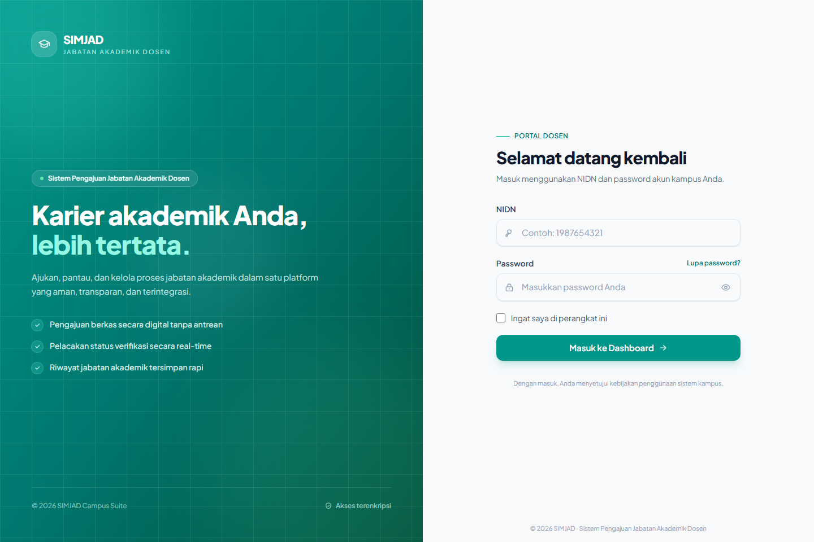
Gambar 01. Halaman masuk: panel informasi di kiri, formulir NIDN dan password di kanan.
Langkah masuk:
Bila NIDN atau password salah, aplikasi menampilkan pesan kesalahan di bawah kolom yang bermasalah dan isian NIDN tetap tersimpan sehingga Anda hanya perlu memperbaiki password.
Catatan — Halaman masuk tidak menyediakan tombol lupa password. Permintaan reset password dilakukan oleh admin melalui menu Data Dosen → ubah data dosen → Password.
Sebagian akun memiliki lebih dari satu peran, misalnya dosen yang juga menjadi anggota TIM PAK atau admin. Setelah masuk, akun seperti ini melihat halaman pemilihan peran.
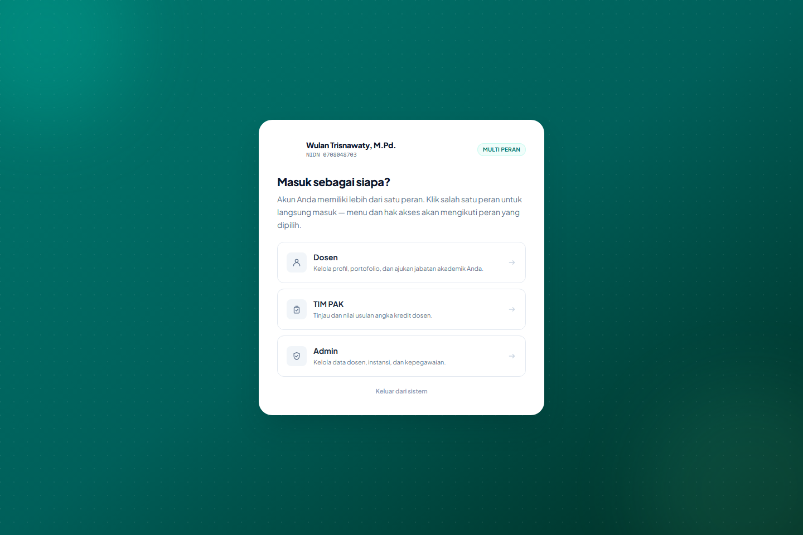
Gambar 42. Halaman "Masuk sebagai siapa?" beserta kartu peran yang dimiliki akun.
Halaman ini hanya muncul sekali setelah login. Untuk berpindah peran tanpa keluar, gunakan menu akun di sudut kanan atas → Ganti peran; Anda akan kembali ke halaman yang sama.
Peringatan — Hak akses mengikuti peran yang sedang aktif. Bila tombol yang Anda cari tidak ada, periksa dulu peran aktif Anda di menu akun sebelum menghubungi admin.
Setelah memilih peran, semua halaman memakai tata letak yang sama:
Klik menu akun di kanan atas → Keluar. Sesi berakhir dan Anda kembali ke halaman masuk. Selalu keluar setelah memakai komputer bersama atau komputer laboratorium.
Dashboard adalah halaman pertama setelah masuk. Isinya bergantung pada peran aktif.
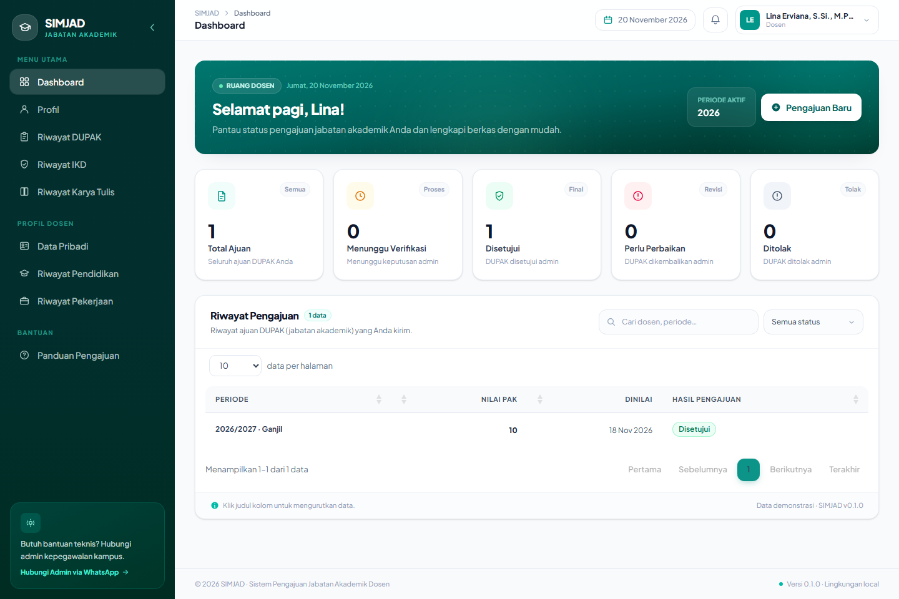
Gambar 02. Dashboard dosen: sapaan, periode aktif, tombol pengajuan, kartu ringkasan, dan tabel riwayat.
Bagian atas berisi:
Di bawahnya ada lima kartu ringkasan pengajuan:
| Kartu | Arti |
|---|---|
| Total Ajuan | Seluruh ajuan DUPAK Anda. |
| Menunggu Verifikasi | DUPAK yang sudah diajukan dan menunggu keputusan admin. |
| Disetujui | DUPAK yang telah disetujui admin. |
| Perlu Perbaikan | DUPAK yang dikembalikan admin untuk dibetulkan. |
| Ditolak | DUPAK yang ditolak beserta alasannya. |
Kartu bersifat ringkasan; klik untuk melihat daftar yang sesuai. Tabel Riwayat Pengajuan di bawahnya menampilkan periode, tanggal, status berwarna, dan tombol aksi. Gunakan kotak Cari atau saringan Semua status untuk mempersempit daftar. Bila periode belum punya nilai PAK, tabel menampilkan keterangan "DUPAK bisa diajukan setelah nilai PAK periode tersebut tersedia."
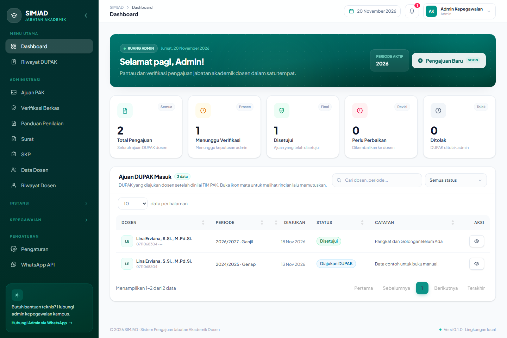
Gambar 20. Ruang Admin: ringkasan seluruh ajuan dosen dan tabel DUPAK terbaru.
Admin melihat sapaan Ruang Admin, periode aktif, dan tombol Buat Pengajuan yang mengarah ke data ajuan. Lima kartu ringkasan berisi Total Pengajuan, Menunggu Verifikasi, Disetujui, Perlu Perbaikan, dan Ditolak untuk seluruh dosen.
Di bagian bawah, kartu DUPAK memuat daftar pengajuan terbaru: nama dosen, periode, status, dan tombol bermata (lihat DUPAK) menuju halaman detail verifikasi. Kotak Cari dan saringan status bekerja seperti pada tabel lain.
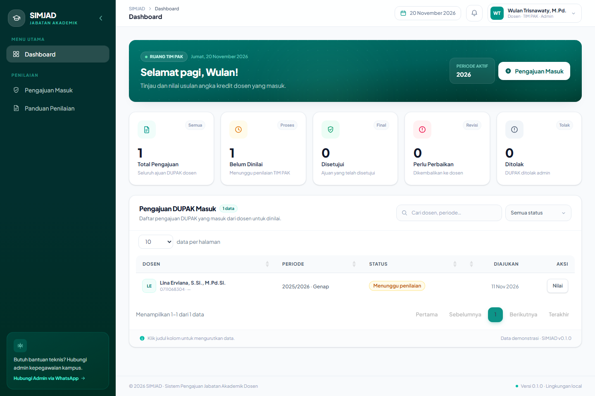
Gambar 43. Ruang TIM PAK: antrean pengajuan yang belum dinilai.
TIM PAK melihat Ruang TIM PAK, tombol Pengajuan Masuk, dan kartu Belum Dinilai yang berisi jumlah usulan yang menunggu penilaian. Tabel Pengajuan DUPAK Masuk di bawahnya memuat daftar usulan beserta status dan tombol menuju formulir penilaian. Rincian pekerjaan penilaian dijelaskan pada Bab 12.
Menu yang dibahas pada bab ini ada di kelompok Profil dan Profil Dosen pada bilah samping: Data Pribadi, Riwayat Pendidikan, Riwayat Pekerjaan, serta Riwayat Karya Tulis pada kelompok Menu Utama.
Catatan — Lengkapi profil sebelum mengisi kegiatan. Data pribadi, pendidikan, dan kepangkatan dipakai sebagai isi halaman muka DUPAK serta bahan surat yang dibuat admin.
Klik Profil pada kelompok Menu Utama.
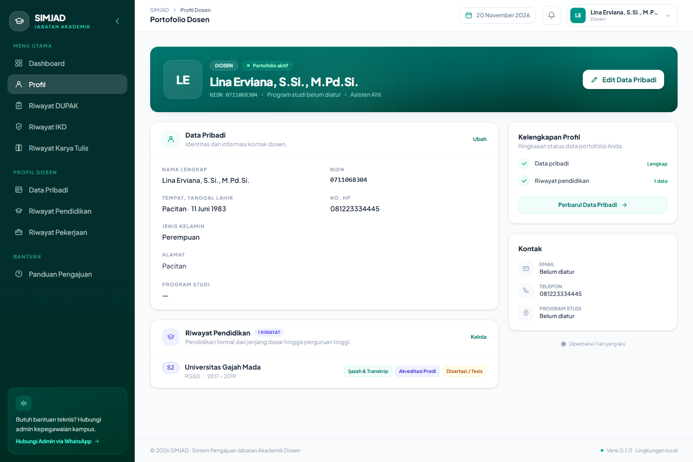
Gambar 03. Portofolio dosen: kartu identitas, ringkasan data pribadi, kelengkapan profil, dan riwayat pendidikan.
Halaman ini adalah ringkasan seluruh data Anda:
Buka Profil Dosen → Data Pribadi, atau tekan Edit Data Pribadi pada portofolio.
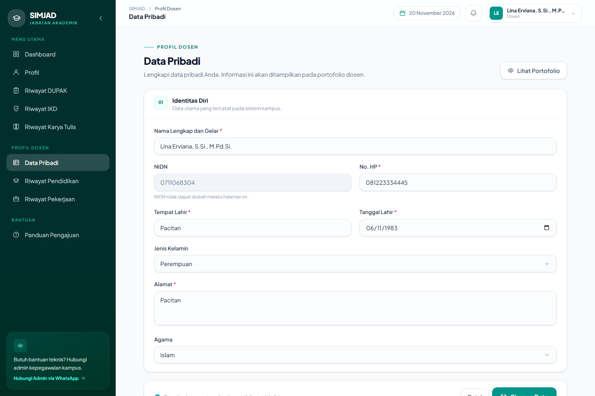
Gambar 04. Formulir data pribadi dosen.
Isian yang tersedia:
| Isian | Wajib | Keterangan |
|---|---|---|
| Nama Lengkap dan Gelar | Ya | Tulis nama beserta gelar, contoh Lina Erviana, S.Si., M.Pd.Si. |
| NIDN | — | Mengikuti akun, tidak dapat diubah sendiri. |
| No. HP | Ya | Dipakai admin untuk menghubungi Anda melalui WhatsApp. |
| Tempat Lahir | Ya | |
| Tanggal Lahir | Ya | Format tanggal dd/mm/yyyy pada pemilih tanggal. |
| Jenis Kelamin | — | Dropdown dengan pencarian Cari jenis kelamin…. |
| Alamat | Ya | Alamat lengkap tempat tinggal saat ini. |
| Agama | — | Dropdown dengan pencarian Cari agama…. |
Tekan Simpan Data. Bila ada isian yang belum benar, muncul kotak merah "Periksa kembali data Anda." beserta jumlah isian yang perlu diperbaiki; kolom bermasalah ditandai bingkai merah dan pesan di bawahnya. Setelah tersimpan, data langsung tampil pada portofolio — sesuai keterangan pada formulir, "Data akan langsung tampil pada portofolio setelah disimpan."
Buka Profil Dosen → Riwayat Pendidikan.
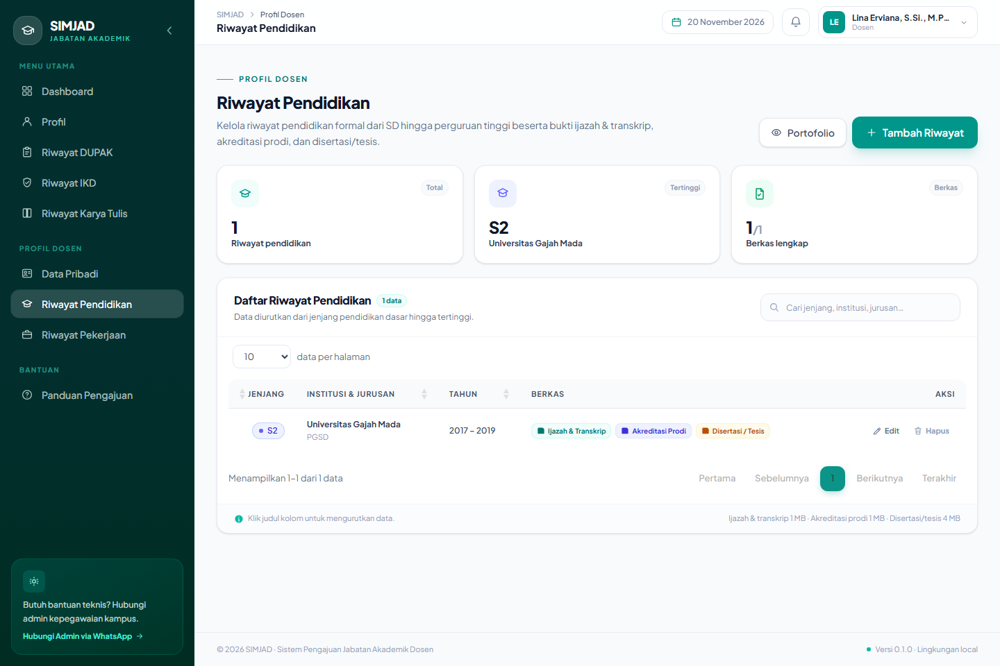
Gambar 05. Halaman riwayat pendidikan: kartu ringkasan di atas, tabel riwayat di bawah.
Tiga kartu ringkasan di bagian atas:
| Kartu | Isi |
|---|---|
| Total | Jumlah riwayat pendidikan yang tercatat (contoh: 1 Riwayat pendidikan). |
| Tertinggi | Jenjang dan institusi tertinggi (contoh: S2 — Universitas Gajah Mada). |
| Berkas | Perbandingan berkas lengkap terhadap jumlah riwayat (contoh: 1/1 Berkas lengkap). |
Tabel Daftar Riwayat Pendidikan memuat kolom Jenjang, Institusi & Jurusan, Tahun, Berkas, dan Aksi. Data diurutkan dari jenjang pendidikan dasar ke tertinggi. Klik judul kolom untuk mengurutkan, gunakan kotak Cari jenjang, institusi, jurusan… untuk menyaring, dan pilih jumlah baris melalui pemilih data per halaman. Catatan di bawah tabel menyebut batas ukuran berkas: Ijazah & transkrip 1 MB · Akreditasi prodi 1 MB · Disertasi/Tesis 4 MB.
Tombol + Tambah Riwayat di kanan atas membuka formulir baru; ikon pensil mengubah data, ikon tempat sampah menghapusnya setelah konfirmasi. Tombol Portofolio mengembalikan Anda ke halaman ringkasan.
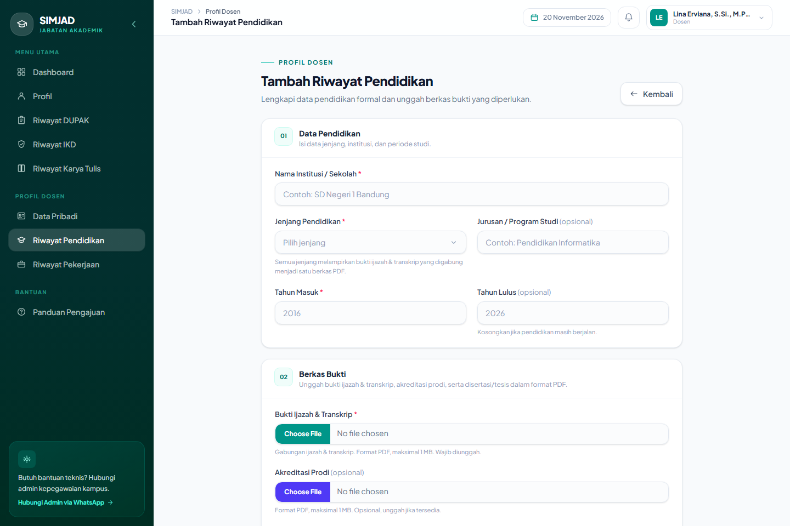
Gambar 06. Formulir tambah riwayat pendidikan: bagian Data Pendidikan dan Berkas Bukti.
Saat mengubah data yang sudah ada, tiap isian berkas menampilkan Berkas saat ini dengan tautan Lihat. Kosongkan pemilih berkas jika tidak ingin mengganti berkas lama. Berkas disimpan otomatis dengan nama yang memuat NIDN Anda dan hanya dapat diakses oleh pemilik akun.
Buka Profil Dosen → Riwayat Pekerjaan.
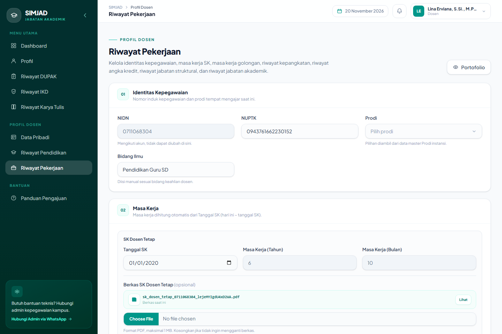
Gambar 07. Riwayat pekerjaan: identitas kepegawaian, masa kerja SK, dan masa kerja golongan.
Halaman ini menggabungkan tujuh bagian bernomor. Bagian yang tampak pada gambar:
Bagian berikutnya di halaman yang sama:
Tautan SK di bagian atas halaman membuka dokumen SK pada tab baru. Tombol Portofolio kembali ke halaman ringkasan.
Langkah pertama pengajuan baru menampilkan status jabatan akademik Anda.
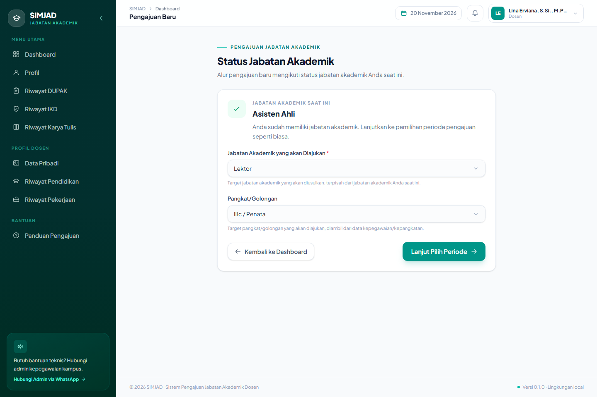
Gambar 08. Halaman Status Jabatan Akademik: jabatan saat ini dan target yang diusulkan.
Buka Menu Utama → Riwayat Karya Tulis.
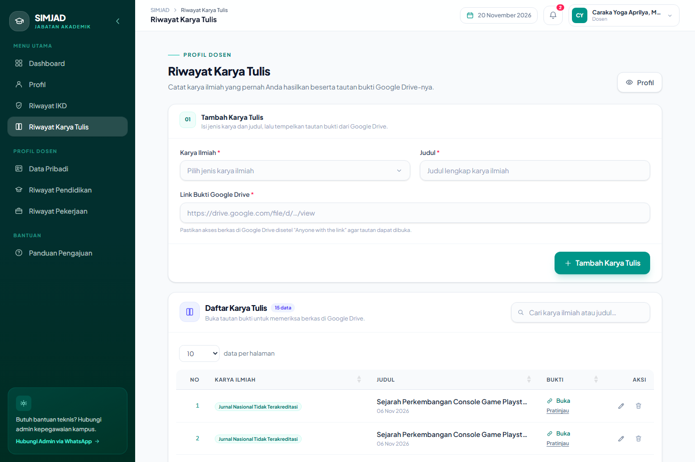
Gambar 17. Riwayat karya tulis: formulir tambah di atas, daftar karya di bawah.
Bagian 01 Tambah Karya Tulis berisi:
https://drive.google.com/file/d/…/view.
Pastikan akses berkas disetel "Anyone with the link" agar tautan dapat dibuka.Tabel Daftar Karya Tulis menampilkan jumlah data, kolom No, Karya Ilmiah (beserta kategori kegiatannya), Judul (beserta tanggal pencatatan), Bukti, dan Aksi. Kolom Bukti berisi tautan Buka (membuka Google Drive) dan Pratinjau. Ikon pensil menyunting, ikon tempat sampah menghapus setelah konfirmasi. Gunakan kotak Cari karya ilmiah atau judul… untuk menyaring daftar. Tombol Profil di kanan atas kembali ke portofolio.
Bab ini adalah inti pekerjaan dosen. Alurnya berurutan: pilih jabatan yang diusulkan → tentukan periode → tentukan masa penilaian → isi komponen kegiatan → periksa di tab Review → ajukan ke TIM PAK. Setelah dinilai, ajukan DUPAK dan cetak hasilnya.
Catatan — Menu Riwayat DUPAK pada bilah samping membuka halaman yang sama dengan tombol Buat Pengajuan di dashboard. Bila Anda belum memiliki jabatan akademik, aplikasi mengarahkan ke tahap IKD (Bab 6) lebih dulu.
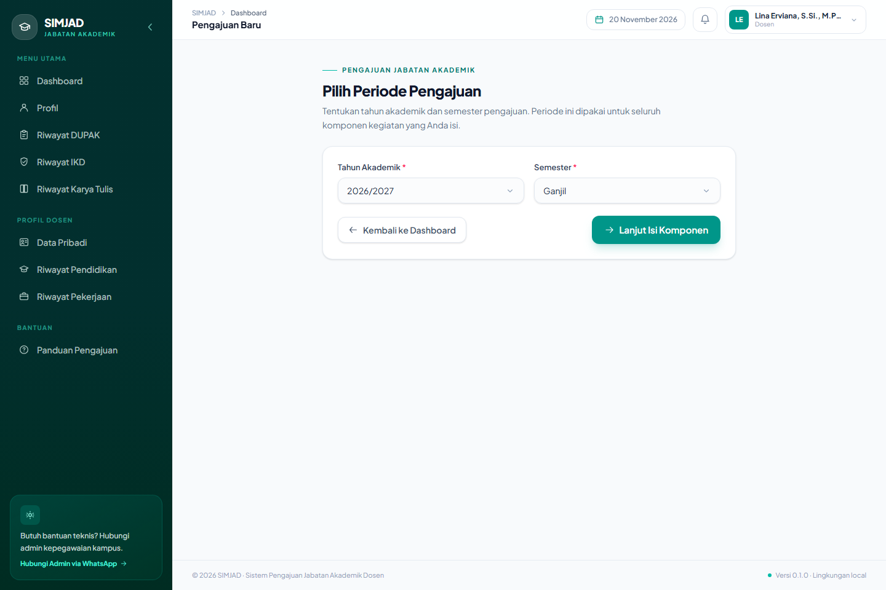
Gambar 09. Halaman Pilih Periode Pengajuan.
2026/2027.Keterangan halaman menjelaskan bahwa periode ini dipakai untuk seluruh komponen kegiatan yang Anda isi. Satu kombinasi tahun akademik dan semester hanya dapat dipakai satu kali; bila periode sudah pernah diajukan, aplikasi menolak dan menyarankan periode lain.
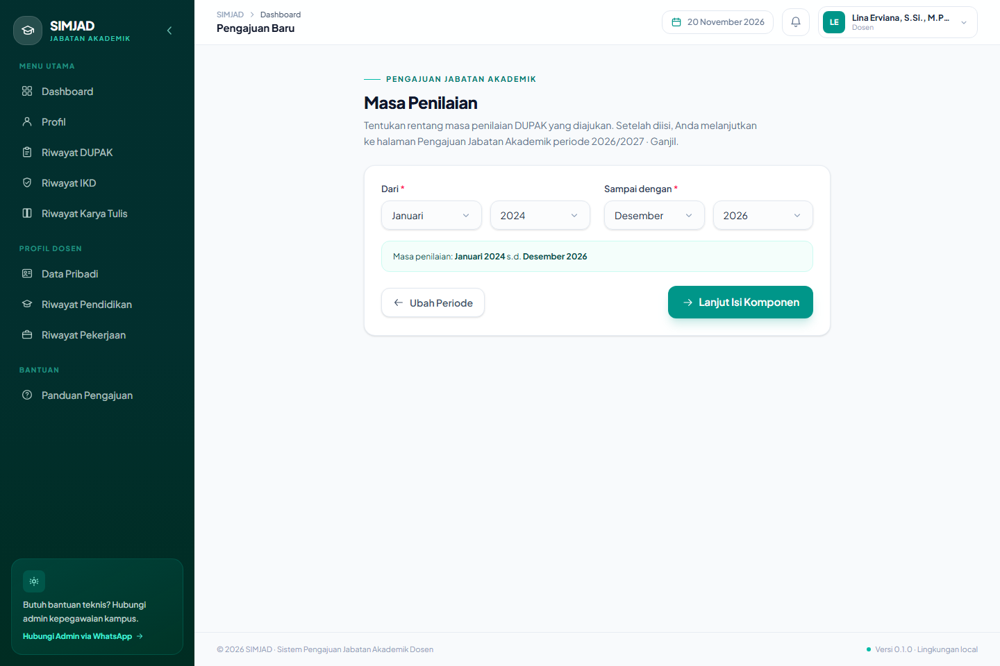
Gambar 10. Halaman Masa Penilaian: rentang bulan dan tahun penilaian DUPAK.
Rentang ini tercetak pada halaman muka DUPAK, jadi pastikan sesuai dengan periode kinerja yang Anda usulkan.
Setelah masa penilaian ditetapkan, Anda masuk ke halaman Pengajuan Baru.
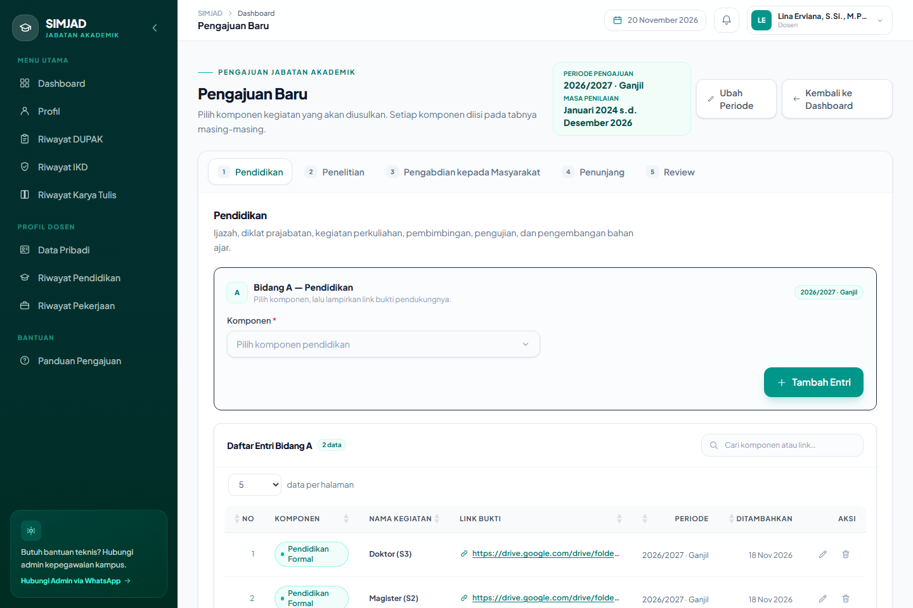
Gambar 11. Halaman Pengajuan Baru: ringkasan periode di kanan atas dan lima tab komponen.
Panel kanan atas menampilkan PERIODE PENGAJUAN (contoh: 2026/2027 · Ganjil) dan MASA PENILAIAN (Januari 2024 s.d. Desember 2026). Dua tombol di sampingnya: Ubah Periode dan Kembali ke Dashboard.
Lima tab di bawahnya:
| Tab | Bidang | Cakupan menurut aplikasi |
|---|---|---|
| 1 Pendidikan | Bidang A | Ijazah, diklat prajabatan, kegiatan perkuliahan, pembimbingan, pengujian, dan pengembangan bahan ajar. |
| 2 Penelitian | Bidang C | Hasil penelitian, publikasi ilmiah, buku ajar, dan kekayaan intelektual yang diakui. |
| 3 Pengabdian kepada Masyarakat | Bidang D | Kegiatan pengabdian kepada masyarakat beserta hasil dan bukti pelaksanaannya. |
| 4 Penunjang | Bidang E | Organisasi profesi, penghargaan, dan tugas tambahan. |
| 5 Review | — | Rekap seluruh entri dari keempat bidang dalam satu formulir. |
Catatan — Tab Pendidikan memuat dua bidang sekaligus: Bidang A (Pendidikan) dan Bidang B (Pelaksanaan Pendidikan). Keduanya diisi pada tab yang sama dengan dua kartu formulir terpisah.
Setiap tab berisi dua bagian: kartu formulir Bidang X —
https://drive.google.com/file/d/…/view. Pastikan tautan dapat dibuka oleh penilai.Entri yang sudah tersimpan dapat diubah lewat ikon pensil atau dihapus lewat ikon tempat sampah (dengan konfirmasi). Kotak Cari komponen atau link… menyaring tabel, dan pemilih data per halaman mengatur jumlah baris yang ditampilkan.
Daftar berikut diambil langsung dari aplikasi, sehingga sama dengan isi dropdown di layar.
Bidang A — Pendidikan
Bidang B — Pelaksanaan Pendidikan
Bidang C — Penelitian
Untuk rincian Hasil Penelitian yang Dipublikasikan tersedia pilihan tingkat ketiga: Buku Referensi, Jurnal Ilmiah Internasional, Jurnal Ilmiah Nasional Terakreditasi, Jurnal Ilmiah Nasional Tidak Terakreditasi, Seminar Internasional, Seminar Nasional, Koran atau Majalah Umum.
Bidang D — Pengabdian kepada Masyarakat
Bidang E — Penunjang
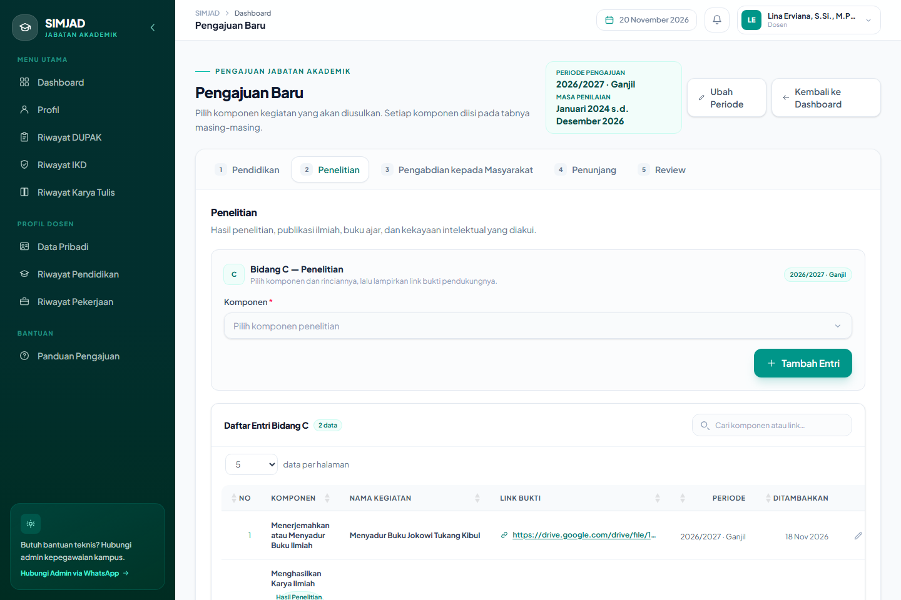
Gambar 12. Tab Penelitian (Bidang C) setelah beberapa entri ditambahkan. Kolom tabel: No, Komponen, Nama Kegiatan, Link Bukti, Periode, Ditambahkan, Aksi.
Klik tab 5 Review.
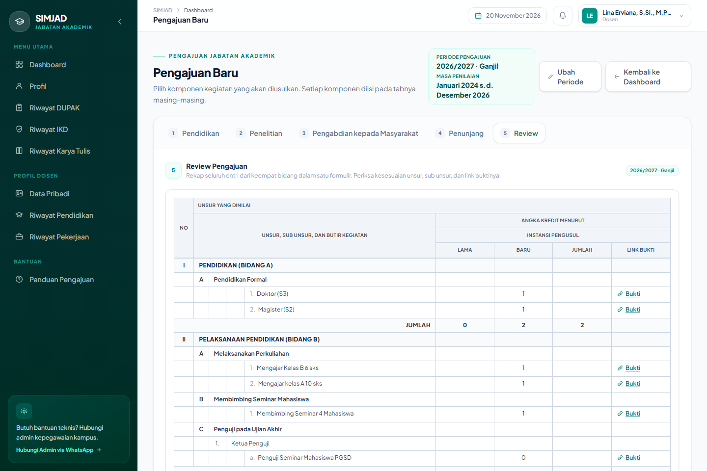
Gambar 13. Tab Review: rekap seluruh entri dalam bentuk tabel DUPAK.
Keterangan bagian atas: "Rekap seluruh entri dari keempat bidang dalam satu formulir. Periksa kesesuaian unsur, sub unsur, dan link buktinya." Lencana di kanan atas menampilkan periode (2026/2027 · Ganjil).
Tabel rekap memakai susunan resmi DUPAK:
Bila ada entri yang salah, kembali ke tab bidangnya (1–4), tekan ikon pensil pada entri, betulkan, lalu simpan. Tab Review selalu menampilkan data terbaru.
Panel bawah tab Review berisi Status usulan: beserta lencana status. Saat periode baru dibuat, statusnya Belum diajukan. Bila sudah dinilai, di sebelah status tampil keterangan tanggal, contoh dinilai 18 Nov 2026.
Tiga tombol pada panel:
| Tombol | Fungsi | Aktif bila |
|---|---|---|
| Ajukan ke TIM PAK | Mengirim usulan periode ini untuk dinilai. | Belum terkunci oleh keputusan admin. |
| Ajukan Dupak | Meneruskan DUPAK ke admin memakai nilai dari TIM PAK. | Status Sudah dinilai. |
| Cetak Dupak ke PDF | Membuka halaman cetak DUPAK pada tab baru. | Selalu tersedia. |
Langkah mengajukan ke TIM PAK:
Peringatan — Periode tanpa entri tidak dapat diajukan. Aplikasi menolak dengan pesan "Belum ada kegiatan pada periode ini yang bisa diajukan". Tambahkan minimal satu entri terlebih dahulu.
DUPAK memakai nilai dari TIM PAK; dosen tidak mengisi ulang angka kredit. Setelah admin memutuskan:
Tekan Cetak Dupak ke PDF pada panel Review atau Cetak PDF pada tab Riwayat Ajuan DUPAK. Aplikasi membuka halaman cetak pada tab baru tanpa menu aplikasi. Pada dialog cetak peramban, pilih tujuan Save as PDF, ukuran kertas A4, orientasi Landscape (tabel rekap lebih lebar daripada tinggi), lalu simpan.
Halaman cetak memuat kolom Lama, Baru, dan Jumlah di bawah grup Tim Penilai serta label jumlah panjang Jumlah (Unsur Utama + Penunjang), dan tidak memuat kolom Link Bukti.
Halaman Indikator Kinerja Dosen (menu Riwayat IKD) dipakai dosen yang belum memiliki jabatan akademik — yaitu pengajuan jabatan akademik pertama. Dosen yang sudah memiliki jabatan akademik tetap dapat membuka halaman ini untuk melengkapi atau memperbarui berkas.
Dua berkas wajib diunggah, keduanya dalam format PDF:
| Berkas | Batas ukuran | Isi |
|---|---|---|
| BKD 2 Semester Terakhir (Status Memenuhi, Tridharma PT terpenuhi) | 3 MB | Bukti Kompilasi LKD 2 semester terakhir dalam satu file PDF. |
| Bukti Pemenuhan Indikator Kinerja Dosen | 5 MB | Kompilasi Bukti Klaim IKD sesuai target JAD (Asisten Ahli) dari laman SISTER Dosen dalam satu file PDF, mencakup komponen [a] Pendidikan (kegiatan pembelajaran, pengajaran, dan pengembangan akademik) dan [b] Penelitian & Pengmas (kontribusi langsung kepada masyarakat dan penerapan ilmu). |
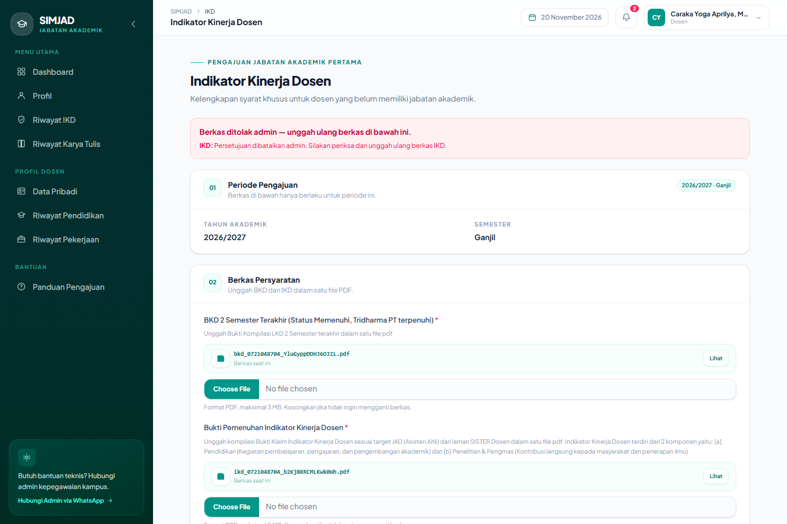
Gambar 18. Halaman Indikator Kinerja Dosen: periode pengajuan, dua berkas wajib, dan tabel berkas tersimpan.
Halaman dibuka dengan judul Indikator Kinerja Dosen dan keterangan "Kelengkapan syarat khusus untuk dosen yang belum memiliki jabatan akademik."
Bila ada isian bermasalah, muncul kotak "Terdapat N isian yang perlu diperbaiki sebelum berkas dapat disimpan." Berkas yang sudah diajukan akan terkunci: aplikasi menampilkan pesan "Berkas periode ini sudah diajukan" beserta status dan keterangan "Berkas tidak dapat diubah selama menunggu verifikasi admin."
Bila admin menolak berkas, halaman menampilkan kotak merah "Berkas ditolak admin — unggah ulang berkas di bawah ini." beserta catatan admin, misalnya "IKD: Persetujuan dibatalkan admin. Silakan periksa dan unggah ulang berkas IKD." Unggah ulang berkas yang diminta, lalu ajukan kembali.
Di bawah formulir terdapat tabel berkas tersimpan dengan keterangan "Ajukan berkas ke admin untuk diverifikasi. Berkas yang ditolak dapat diperbaiki lalu diajukan ulang."
Menu Riwayat IKD menampilkan riwayat pengajuan berkas beserta keputusan admin.
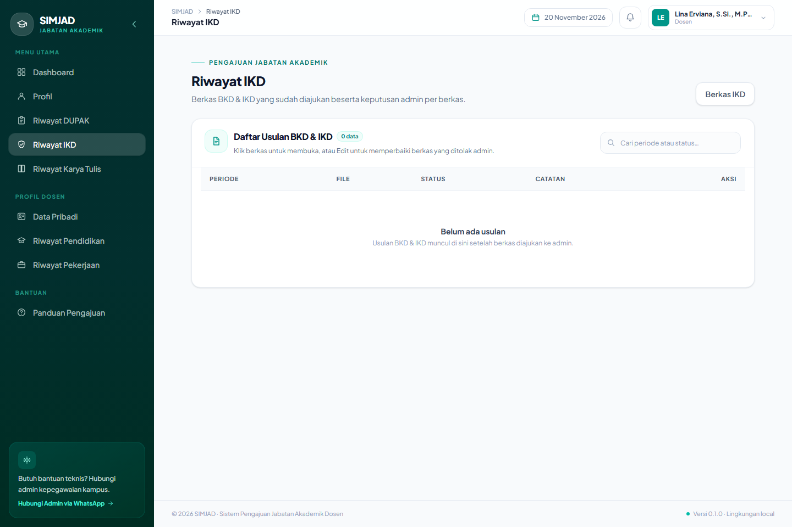
Gambar 15. Riwayat IKD: tabel usulan BKD & IKD beserta status dan catatan admin.
Status yang mungkin muncul mengikuti keputusan admin: menunggu verifikasi, disetujui, atau ditolak. Berkas berstatus ditolak dapat diperbaiki melalui tombol Edit yang mengarah kembali ke formulir unggah.
Menu Riwayat DUPAK (judul halaman Riwayat Pengajuan) menampilkan "Riwayat nilai PAK tiap periode beserta hasil ajuan DUPAK Anda." Tombol + Pengajuan Baru di kanan atas memulai usulan periode baru. Halaman ini memiliki dua tab.
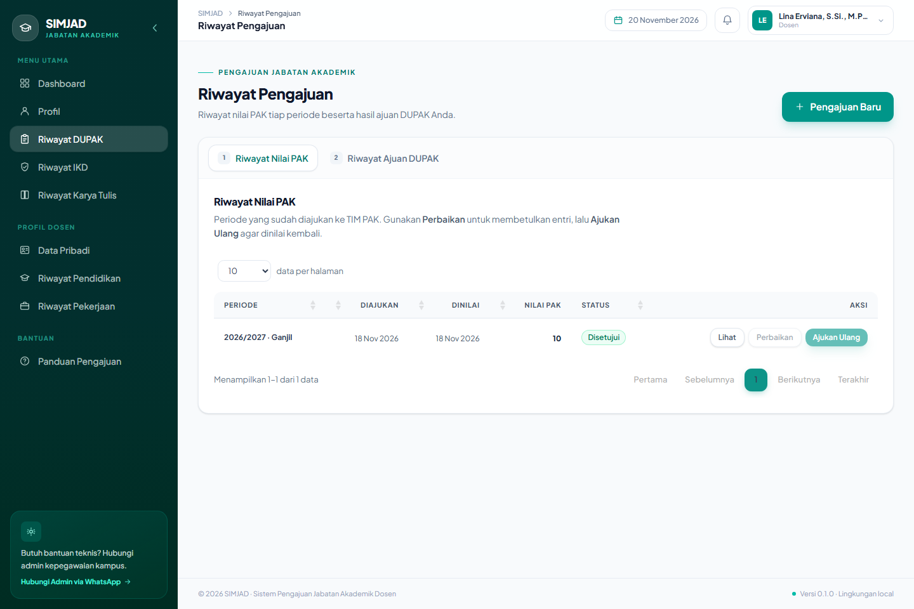
Gambar 14. Riwayat Pengajuan: tab Riwayat Nilai PAK berisi periode yang sudah diajukan ke TIM PAK.
Keterangan tab: "Periode yang sudah diajukan ke TIM PAK. Gunakan Perbaikan untuk membetulkan entri, lalu Ajukan Ulang agar dinilai kembali."
Kolom tabel: Periode (contoh 2026/2027 · Ganjil), Diajukan, Dinilai, Nilai PAK, Status, dan Aksi. Tiap kolom judul dapat diurutkan; pemilih data per halaman mengatur jumlah baris; navigasi Pertama / Sebelumnya / Berikutnya / Terakhir tampil di bawah tabel bersama keterangan "Menampilkan 1–1 dari 1 data".
Arti tombol pada kolom Aksi:
| Tombol | Fungsi |
|---|---|
| Lihat | Membuka rekap nilai periode tersebut. Baru aktif setelah TIM PAK menyimpan nilai PAK. |
| Perbaikan | Membuka formulir pengajuan pada tab Review agar entri dapat dibetulkan. |
| Ajukan Ulang | Mengirim kembali periode ke TIM PAK. Muncul konfirmasi Ajukan ulang nilai PAK? dengan pesan "Nilai PAK periode 2026/2027 · Ganjil akan diajukan ulang ke TIM PAK untuk dinilai kembali." |
Bila belum ada data, tabel menampilkan "Belum ada nilai PAK".
Catatan — Pada periode yang sudah Disetujui, tombol Perbaikan dan Ajukan Ulang tidak aktif karena nilai sudah terkunci. Gunakan periode berikutnya untuk kegiatan baru.
Tab ini memuat DUPAK yang sudah diteruskan ke admin. Kolom: Periode, Nilai PAK, Dinilai, Hasil Pengajuan, dan Aksi. Tombol Lihat membuka rekap DUPAK, sedangkan Cetak PDF membuka versi cetak pada tab baru. Bila belum ada data, muncul "Belum ada ajuan DUPAK".
Menu Panduan Pengajuan menyajikan petunjuk lengkap di dalam aplikasi, sehingga dosen tidak perlu membuka dokumen terpisah.
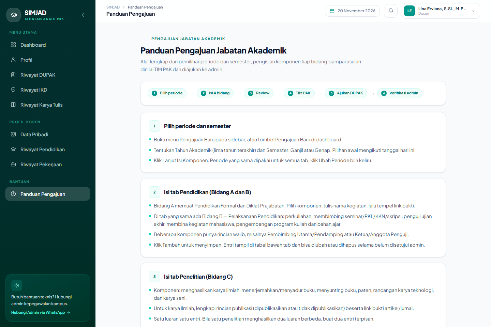
Gambar 16. Panduan Pengajuan: diagram alur enam tahap dan langkah rinci per tahap.
Bab ini untuk pengguna dengan role Admin. Menu terkait berada pada kelompok ADMINISTRASI di bilah samping: Data Dosen dan Riwayat Dosen.
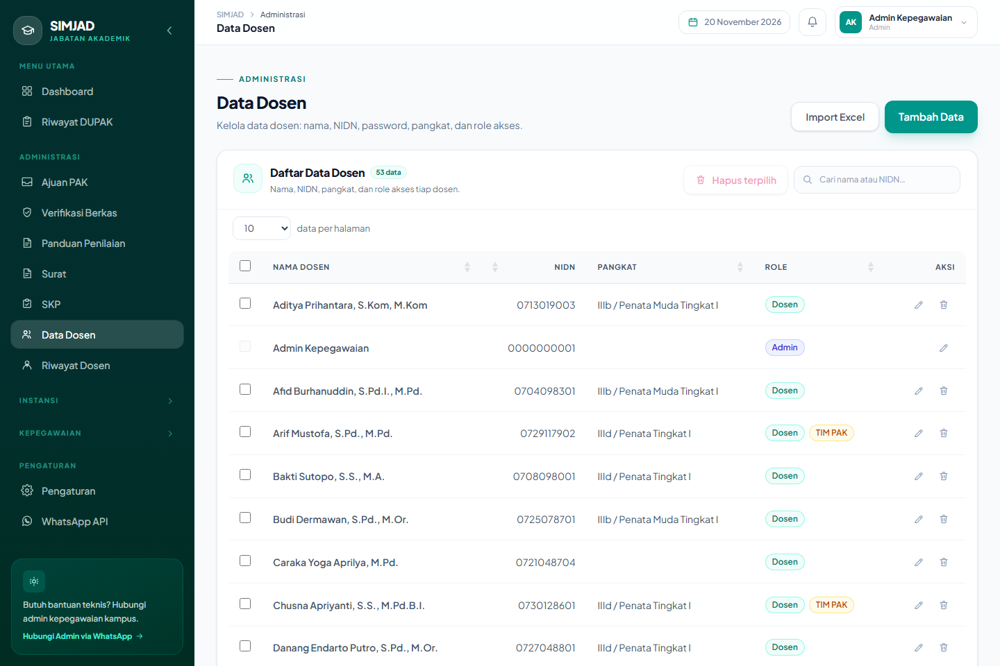
Gambar 21. Data Dosen: 53 data, tombol Import Excel dan Tambah Data, kolom Nama Dosen, NIDN, Pangkat, Role, Aksi.
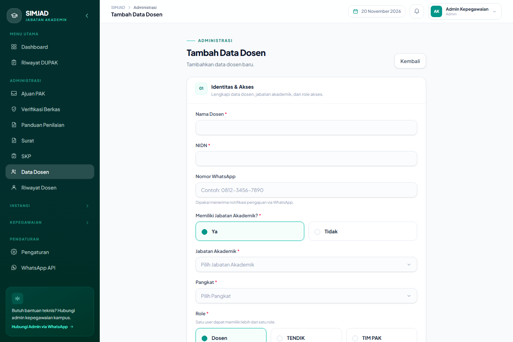
Gambar 22. Formulir Tambah Data Dosen: bagian Identitas & Akses.
#34.| Isian | Wajib | Keterangan |
|---|---|---|
| Nama Dosen | Ya | Nama lengkap beserta gelar, misalnya Caraka Yoga Aprillya, M.Pd. |
| NIDN | Ya | Nomor Induk Dosen Nasional. |
| Nomor WhatsApp | Tidak | Contoh format 0812-3456-7890. Keterangan: "Dipakai menerima notifikasi pengajuan via WhatsApp." |
| Memiliki Jabatan Akademik? | Ya | Pilihan Ya atau Tidak. Memilih Tidak menonaktifkan dua isian di bawahnya — dipakai untuk dosen yang masih mengajukan jabatan pertama. |
| Jabatan Akademik | Ya (bila Ya) | Dropdown dengan pencarian "Cari jabatan akademik…", misalnya Asisten Ahli, Lektor, Lektor Kepala, Guru Besar. |
| Pangkat | Ya (bila Ya) | Dropdown dengan pencarian "Cari pangkat…", misalnya III/b / Penata Muda Tingkat I. |
| Role | Ya | Kotak centang Dosen, TENDIK, TIM PAK, Admin. Keterangan: "Satu user dapat memiliki lebih dari satu role." |
| Password | Ya saat tambah | Saat mengubah data, kosongkan bila password tidak ingin diganti. |
| Konfirmasi Password | Ya saat tambah | Harus sama dengan isian password. |
Peringatan — NIDN harus unik. Bila NIDN sudah dipakai akun lain, penyimpanan ditolak. Periksa kembali daftar sebelum menambah data baru agar tidak terjadi duplikat.
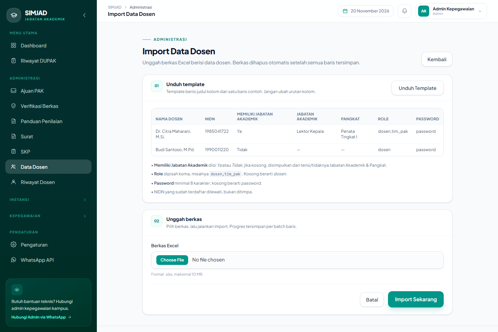
Gambar 23. Import Data Dosen: unduh template, unggah berkas, dan progres per batch.
Catatan — Jangan menutup tab selama proses import berjalan. Import disimpan per batch, sehingga bila koneksi terputus cukup muat ulang halaman lalu jalankan ulang.
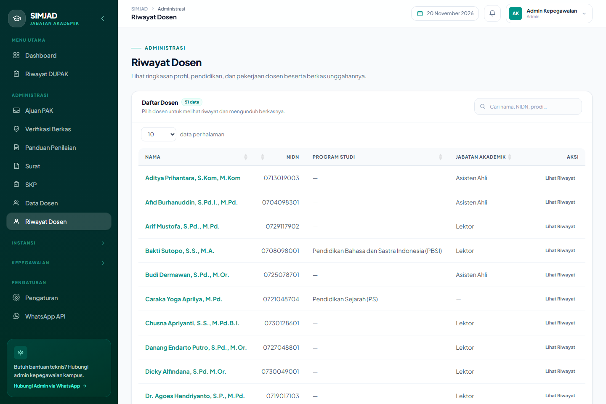
Gambar 24. Riwayat Dosen: daftar dosen beserta NIDN, program studi, dan jabatan akademik.
Klik salah satu baris untuk membuka halaman detail.
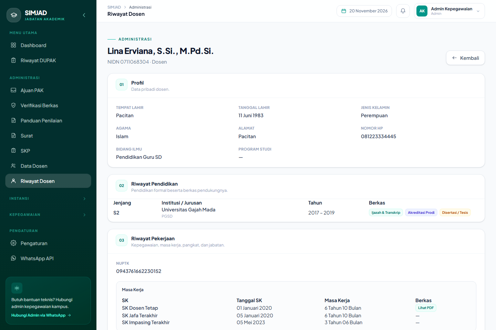
Gambar 25. Detail Riwayat Dosen: profil, riwayat pendidikan, pekerjaan, dan angka kredit.
Halaman detail menampilkan nama dosen sebagai judul, tombol Profil, lalu beberapa kartu:
| Bagian | Kolom | Bila kosong |
|---|---|---|
| Riwayat Pendidikan | Jenjang, Institusi / Jurusan, Tahun, Berkas | Belum ada riwayat pendidikan. |
| Riwayat Pekerjaan | SK, Tanggal SK, Masa Kerja, Berkas | Belum ada riwayat kepangkatan. |
| Riwayat jabatan | — | Belum ada riwayat jabatan. |
| Riwayat angka kredit | — | Belum ada riwayat angka kredit. |
Kolom Berkas berisi tautan untuk membuka berkas pendukung milik dosen yang sedang dibuka, bukan berkas pribadi admin.
Tiga menu pada kelompok ADMINISTRASI menangani berkas yang masuk dari dosen:
| Menu | Isi yang ditangani |
|---|---|
| Verifikasi Berkas | Berkas BKD & IKD dosen tanpa jabatan akademik. |
| Ajuan PAK | Usulan nilai PAK yang perlu diteruskan ke anggota TIM PAK. |
| Verifikasi DUPAK (dibuka dari Ajuan PAK) | Keputusan akhir atas DUPAK: setujui, butuh perbaikan, atau tolak. |
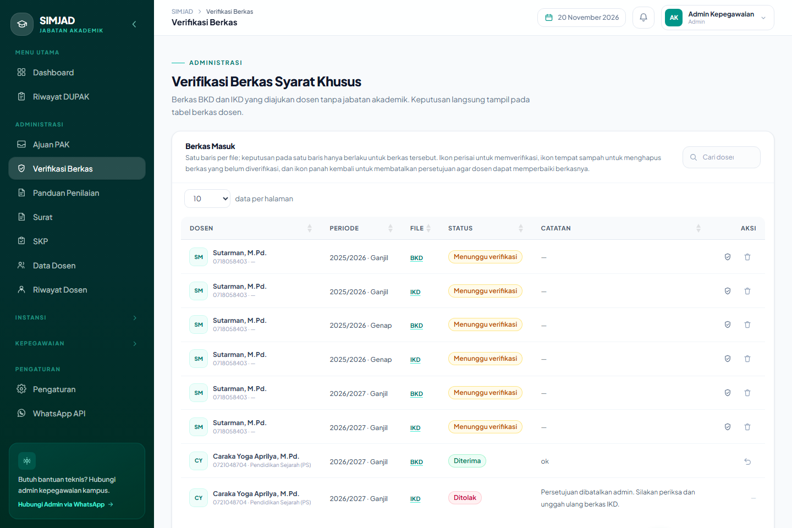
Gambar 26. Verifikasi Berkas Syarat Khusus: satu baris per berkas dengan status dan aksi per baris.
Keterangan halaman: "Berkas BKD dan IKD yang diajukan dosen tanpa jabatan akademik. Keputusan langsung tampil pada tabel berkas dosen."
Kartu Berkas Masuk menjelaskan aturan kerja:
Kolom tabel: Dosen (nama dan NIDN beserta program studi), Periode, File (lencana BKD atau IKD), Status, Catatan, Aksi.
Status yang tampil: Menunggu verifikasi (kuning), Diterima (hijau), Ditolak (merah). Catatan berisi tanda — bila kosong, atau teks dari admin, misalnya "Persetujuan dibatalkan admin. Silakan periksa dan unggah ulang berkas IKD."
Langkah memverifikasi satu berkas:
Ikon lain pada kolom Aksi:
Bila belum ada berkas yang masuk, tabel menampilkan "Belum ada berkas masuk".
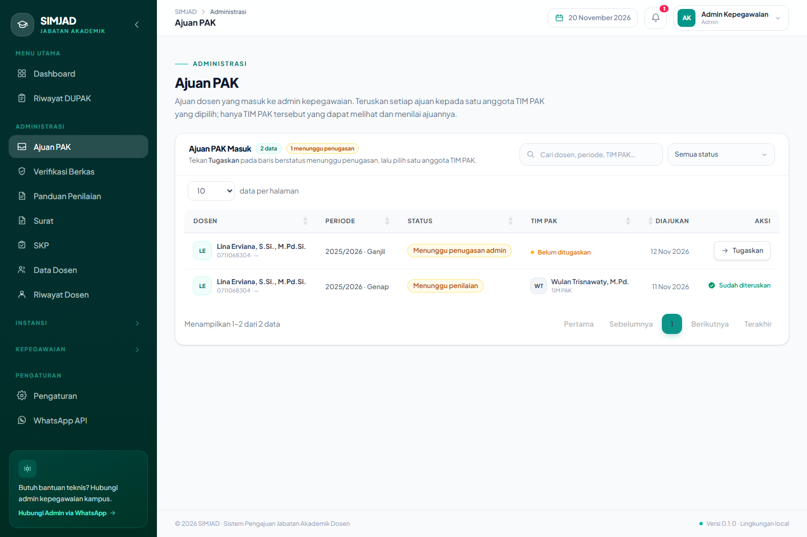
Gambar 27. Ajuan PAK: dua data masuk, satu menunggu penugasan, satu sudah diteruskan.
Keterangan halaman: "Ajuan dosen yang masuk ke admin kepegawaian. Teruskan setiap ajuan kepada satu anggota TIM PAK yang dipilih; hanya TIM PAK tersebut yang dapat melihat dan menilai ajuannya."
Langkah meneruskan ajuan:
Peringatan — Penugasan bersifat mengikat. Bila penugasan gagal diproses, muncul pesan "Penugasan TIM PAK gagal diproses." Periksa apakah anggota TIM PAK masih aktif, lalu ulangi.
Bila belum ada ajuan, tabel menampilkan "Belum ada ajuan PAK" dengan penjelasan "Ajuan dosen akan tampil di sini setelah dikirim ke TIM PAK."
Halaman ini dibuka ketika admin memeriksa DUPAK yang sudah diajukan dosen (status Diajukan DUPAK).
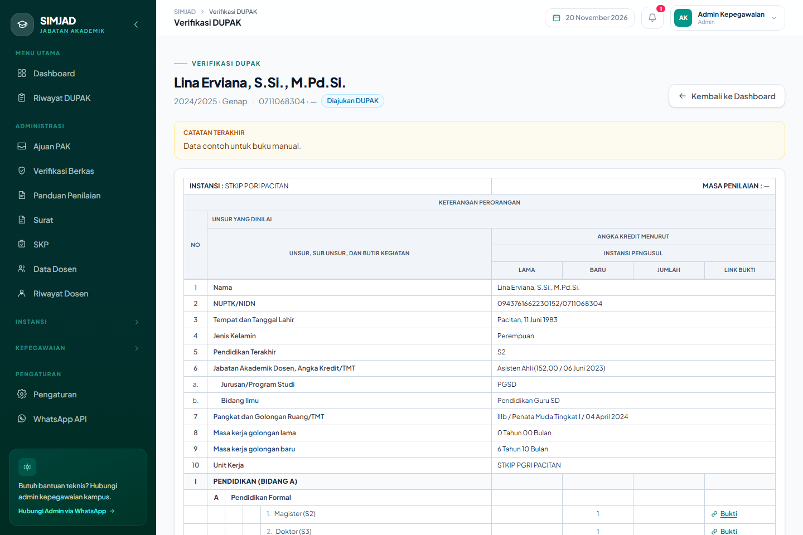
Gambar 28. Verifikasi DUPAK: identitas dosen, rekap DUPAK lengkap, dan panel Keputusan Verifikasi.
Bagian atas halaman:
Rekap DUPAK ditampilkan persis seperti dokumen resmi, dengan kolom tabel sembilan lajur:
Panel Keputusan Verifikasi di bawah rekap berisi petunjuk "Pilih satu keputusan, isi alasan bila diperlukan, lalu tekan Simpan."
| Keputusan | Deskripsi pada layar | Konsekuensi |
|---|---|---|
| Setujui | "DUPAK diterima dan lanjut ke penetapan angka kredit." | Status Disetujui; nilai PAK terkunci dan DUPAK siap dicetak dosen. |
| Butuh Perbaikan | "Dikembalikan ke dosen dengan catatan perbaikan." | Status Butuh Perbaikan; dosen membetulkan entri lalu mengajukan ulang. |
| Tolak | "DUPAK tidak dapat diproses." | Status Ditolak; usulan dihentikan. |
Isian pada panel:
001/SK/PAK/2026. Panjang maksimal 150 karakter.Keterangan penutup: "Keputusan langsung tampil pada halaman Riwayat Pengajuan dosen."
Peringatan — Keputusan Setujui mengunci nilai PAK: TIM PAK tidak dapat menilai ulang dan dosen tidak dapat mengajukan ulang periode tersebut. Pastikan nomor SK sudah benar sebelum menyimpan.
Menu Surat pada kelompok ADMINISTRASI memuat semua dokumen surat kelengkapan usulan jabatan akademik. Keterangan halaman: "Dokumen surat kelengkapan usulan jabatan akademik dosen."
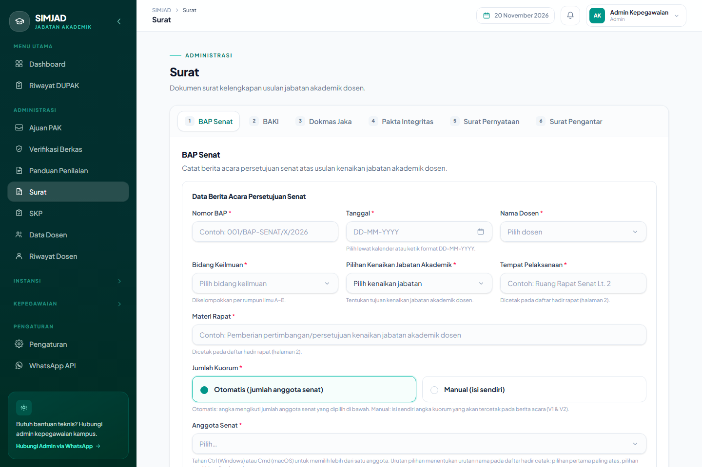
Gambar 29. Halaman Surat: enam tab jenis surat, formulir BAP Senat terbuka.
Enam tab dari kiri ke kanan:
| Tab | Isi |
|---|---|
| 1 BAP Senat | Berita Acara Persetujuan Senat atas usulan kenaikan jabatan akademik dosen. |
| 2 BAKI | Berita Acara Komite Integritas Akademik. |
| 3 Dokmas Jaka | Dokumen Formasi Jabatan Akademik Dosen. Tab ini masih menampilkan Belum ada isi. |
| 4 Pakta Integritas | Pernyataan pakta integritas beserta lembar validasi karya ilmiah. |
| 5 Surat Pernyataan | Surat pernyataan pimpinan untuk dosen yang diusulkan. |
| 6 Surat Pengantar | Surat pengantar usulan, perorangan atau kolektif. |
Setiap tab memakai pola yang sama: formulir di atas (Simpan / Perbarui), lalu kartu daftar berisi surat yang sudah tersimpan dengan keterangan "… terbaru di atas", kotak pencarian, dan tombol Cetak per baris. Bila ada isian bermasalah, muncul pesan "Terdapat N isian yang perlu diperbaiki sebelum … dapat disimpan."
Bagian Data Berita Acara Persetujuan Senat:
001/BAP-SENAT/X/2026.DD-MM-YYYY; dapat dipilih lewat kalender atau diketik.12). Angka ini tercetak
pada kalimat "yang dihadiri oleh sejumlah … orang anggota senat".Ctrl (Windows) atau Cmd
(macOS). Keterangan pada layar: "Urutan pilihan menentukan urutan nama pada daftar hadir
cetak: pilihan pertama paling atas, pilihan …"Tombol Simpan menyimpan BAP; Perbarui muncul saat menyunting. Daftar Berita Acara Persetujuan Senat memiliki pencarian "Cari nomor atau dosen…" dan tombol Cetak untuk membuka PDF BAP.
Bagian Data Berita Acara Komite Integritas Akademik:
001/BAKI/X/2026.DD-MM-YYYY.Daftar BAKI menyediakan pencarian "Cari nomor atau dosen…" dan tombol Cetak.
Formulir memuat Tanggal Pakta (format DD-MM-YYYY) serta bagian validasi:
750/STKIP PGRI PACITAN/KL/TX/2025. Keterangan: "Dipakai
sebagai nomor pada lembar validasi karya ilmiah (opsional)."Keterangan: "Catat surat pernyataan pimpinan untuk dosen yang diusulkan beserta tanggal suratnya." Isian:
| Isian | Keterangan |
|---|---|
| Nama Pimpinan * | Dropdown Pilih pimpinan dengan pencarian "Cari nama pimpinan…". Tiap pilihan tampil sebagai Nama — Jabatan Struktural. Bila kosong, muncul "Belum ada pejabat struktural." dengan tautan untuk menambahkannya lebih dulu. |
| Dosen Yang Di Usulkan * | Dropdown Pilih dosen dengan pencarian "Cari nama dosen…"; tiap pilihan tampil sebagai Nama — NIDN. |
| Tanggal Surat * | Format DD-MM-YYYY. |
Daftar Pernyataan Pimpinan menampilkan surat tersimpan sebagai No.
Keterangan: "Surat pengantar usulan jabatan akademik dosen — perorangan (satu dosen) atau kolektif (beberapa dosen)."
613/STKIP PGRI/KP/III/2026.DD-MM-YYYY.1 berkas.Daftar Surat Pengantar memiliki pencarian "Cari nama atau nomor surat…" dan tombol Cetak untuk membuka PDF surat.
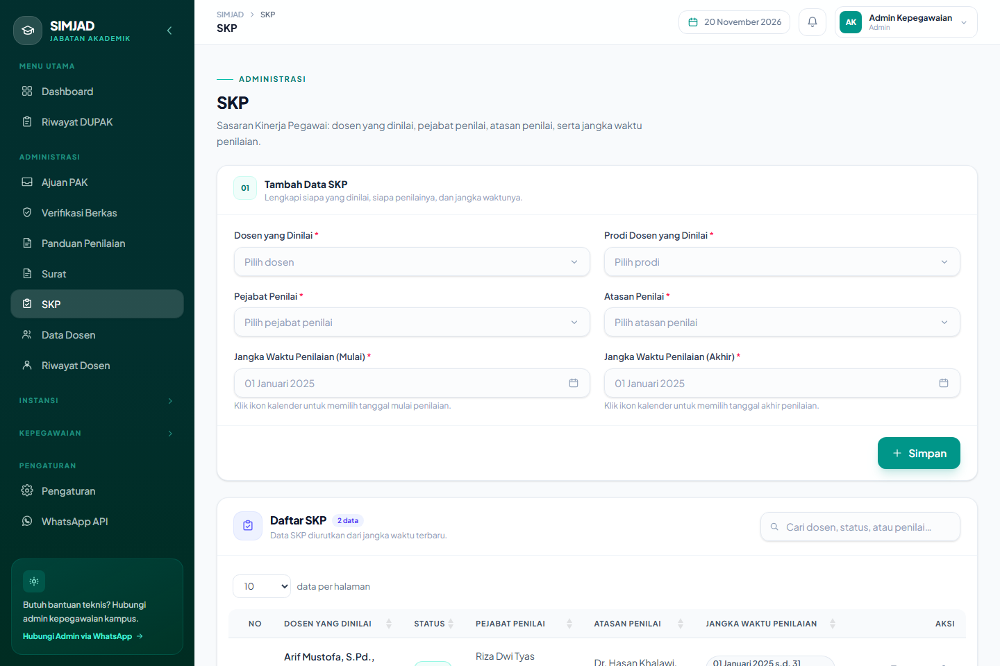
Gambar 30. Halaman SKP: formulir Tambah Data SKP di atas dan Daftar SKP di bawah.
Keterangan halaman: "Sasaran Kinerja Pegawai: dosen yang dinilai, pejabat penilai, atasan penilai, serta jangka waktu penilaian."
Bagian 01 Tambah Data SKP — "Lengkapi siapa yang dinilai, siapa penilainya, dan jangka waktunya." Enam isian wajib, tersusun dua kolom:
| Isian | Pilihan |
|---|---|
| Dosen yang Dinilai * | Dropdown Pilih dosen. |
| Prodi Dosen yang Dinilai * | Dropdown Pilih prodi. |
| Pejabat Penilai * | Dropdown Pilih pejabat penilai. |
| Atasan Penilai * | Dropdown Pilih atasan penilai. |
| Jangka Waktu Penilaian (Mulai) * | Tanggal awal; keterangan "Klik ikon kalender untuk memilih tanggal mulai penilaian." |
| Jangka Waktu Penilaian (Akhir) * | Tanggal akhir; keterangan "Klik ikon kalender untuk memilih tanggal akhir penilaian." |
Tekan + Simpan. Bila menyunting data yang sudah ada, tombol berubah menjadi Simpan Perubahan dan tersedia Batal.
Kartu Daftar SKP menampilkan jumlah data dan keterangan "Data SKP diurutkan dari jangka waktu terbaru." Kotak pencarian berplaceholder "Cari dosen, status, atau penilai…". Kolom: No, Dosen yang Dinilai, Status, Pejabat Penilai, Atasan Penilai, Jangka Waktu Penilaian, Aksi (ikon cetak, ubah, dan hapus). Bila kosong, muncul "Belum ada data SKP".
Tombol cetak membuka dua jenis berkas: halaman cetak SKP (skp.cetak) dan versi cetak dengan
parameter print, keduanya pada tab baru.
Catatan — SKP menjadi dasar penilaian perilaku kerja dosen dan dapat disanggah lewat keberatan SKP (Bab 13). Pastikan pejabat penilai dan atasan penilai sudah benar sebelum menyimpan, karena keduanya menentukan siapa yang berhak menilai.
Kelompok menu KEPEGAWAIAN pada sidebar berisi tiga data master yang dipakai sebagai pilihan dropdown di seluruh aplikasi:
| Menu | Keterangan halaman | Contoh isi |
|---|---|---|
| Jabatan Akademik | "Kelola daftar jabatan akademik dosen (mis. Asisten Ahli, Lektor, Lektor Kepala)." | Asisten Ahli, Lektor, Lektor Kepala, Guru Besar |
| Jabatan Struktural | "Kelola daftar jabatan struktural pada lingkungan perguruan tinggi." | Kepala Biro, Kepala Lembaga, Kepala UPT |
| Kepangkatan | "Kelola daftar pangkat dan golongan kepegawaian dosen." | Penata Tingkat I — III/d |
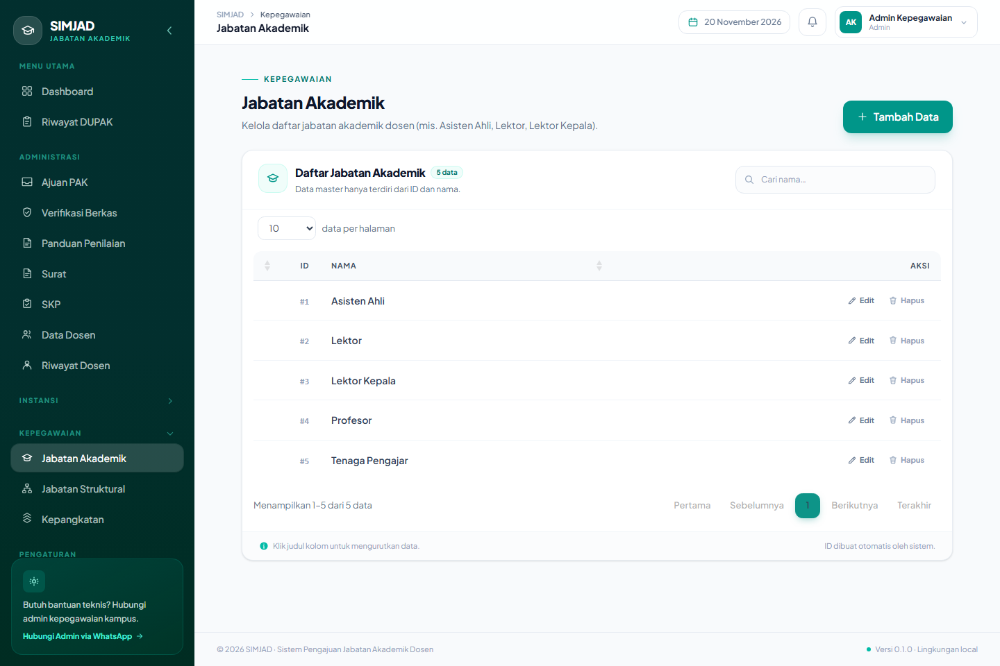
Gambar 31. Daftar Jabatan Akademik beserta jumlah data, pencarian, dan aksi Edit/Hapus.
Kartu Daftar Jabatan Akademik menampilkan lencana jumlah data (contoh 4 data) dan keterangan "Data master hanya terdiri dari ID dan nama." Tabel memuat kolom ID, NAMA, dan AKSI. Klik judul kolom ID atau NAMA untuk mengurutkan; tanda panah kecil menunjukkan kolom yang sedang dipakai.
Langkah menambah data:
Contoh: Lektor Kepala, maksimal 100 karakter.Langkah mengubah: tekan Edit pada baris yang dituju, ubah Nama, lalu tekan Simpan Perubahan. Tombol Batal membatalkan tanpa menyimpan. Keterangan pada formulir: "Perubahan langsung tersimpan setelah tombol ditekan."
Langkah menghapus: tekan Hapus, lalu setujui pertanyaan konfirmasi "Hapus data Jabatan
Akademik '
Kotak pencarian berplaceholder "Cari nama…" menyaring tabel seketika; tombol × di dalamnya membersihkan pencarian. Pilihan 10 / 25 / 50 / 100 di atas tabel mengatur jumlah baris per halaman.
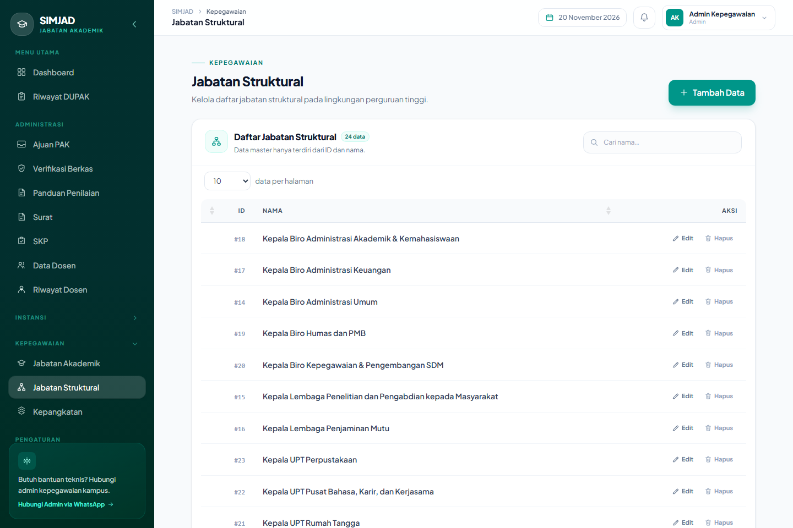
Gambar 32. Daftar Jabatan Struktural dengan 24 data contoh.
Tampilan dan langkah kerjanya sama dengan Jabatan Akademik: kartu Daftar Jabatan Struktural, pencarian "Cari nama…", kolom ID, NAMA, AKSI, serta tombol + Tambah Data. Bedanya hanya isi: jabatan struktural adalah jabatan di lingkungan perguruan tinggi, misalnya Kepala Biro Administrasi Akademik & Kemahasiswaan atau Kepala UPT Perpustakaan.
Daftar ini dipakai oleh menu Surat (pilihan Nama Pimpinan pada Surat Pernyataan) dan oleh menu Pejabat Struktural (Bab 11). Karena itu, tambahkan jabatan struktural lebih dulu sebelum mengisi surat pernyataan pimpinan.
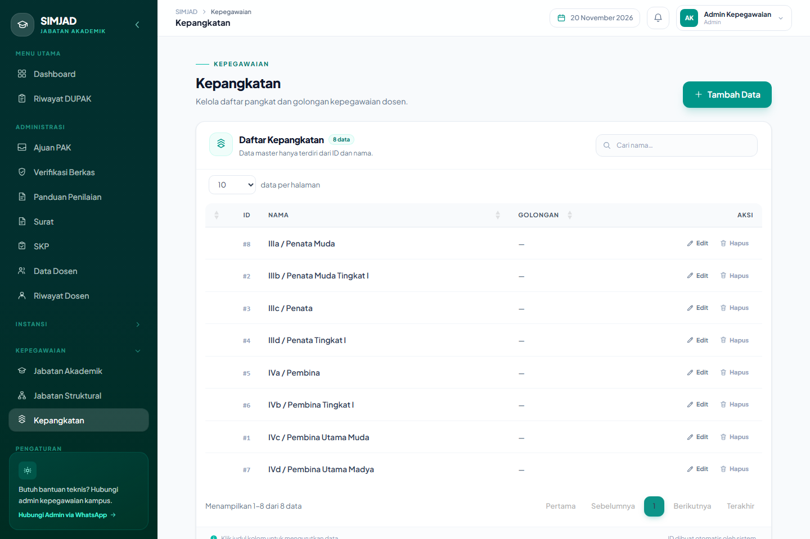
Gambar 33. Daftar Kepangkatan: kolom tambahan Golongan di antara Nama dan Aksi.
Kepangkatan memiliki satu kolom tambahan: Golongan. Pada formulir, selain Nama (placeholder
Contoh: Penata Tingkat I) terdapat isian Golongan Ruang dengan placeholder Contoh: IIIa,
maksimal 20 karakter. Bila golongan dikosongkan, tabel menampilkan tanda —.
Langkah kerjanya tetap sama: + Tambah Data → isi Nama dan Golongan Ruang → Simpan Data; Edit → Simpan Perubahan; Hapus → setujui konfirmasi.
Peringatan — ketiga data master ini dipakai sebagai rujukan di banyak tempat (profil dosen, SKP, surat, dan usulan jabatan). Menghapus satu baris dapat membuat data lama kehilangan rujukan. Ubah nama terlebih dahulu bila hanya ingin membetulkan ejaan.
Menu Instansi → Data Instansi. Keterangan halaman: "Lengkapi identitas instansi yang akan digunakan pada dokumen dan pengajuan jabatan akademik."
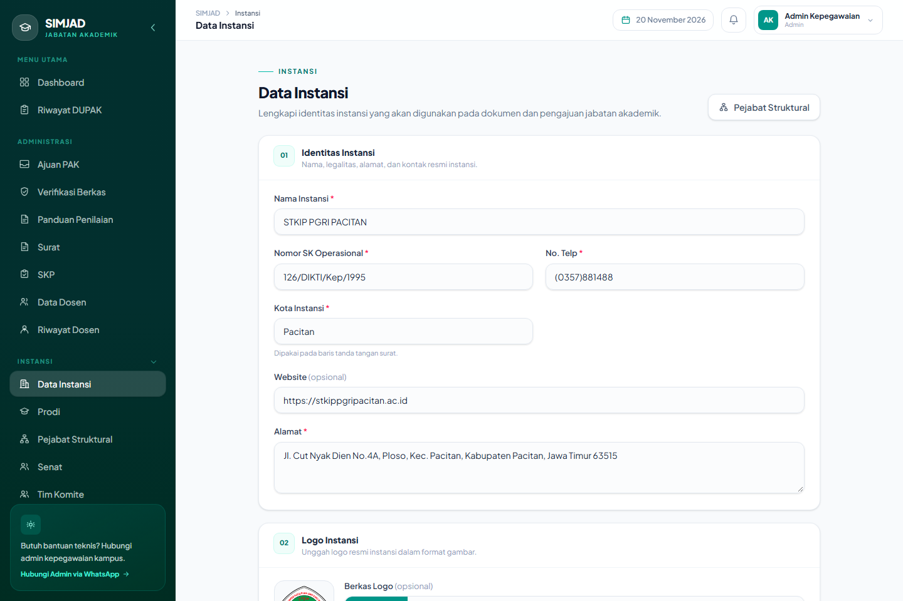
Gambar 34. Data Instansi: bagian 01 Identitas Instansi dan awal bagian 02 Logo Instansi.
Formulir dibagi menjadi beberapa bagian bernomor. Setiap bagian diakhiri tombol simpan tersendiri.
"Nama, legalitas, alamat, dan kontak resmi instansi."
| Isian | Placeholder / keterangan |
|---|---|
| Nama Instansi * | Contoh: Universitas Athena Nusantara |
| Nomor SK Operasional * | Contoh: SK-MENDIKBUD/001/2026 |
| No. Telp * | Contoh: (022) 1234567 |
| Kota Instansi * | Contoh: Bandung — "Dipakai pada baris tanda tangan surat." |
| Website (opsional) | Contoh: https://athena.ac.id |
| Alamat * | Alamat lengkap instansi |
"Unggah logo resmi instansi dalam format gambar." Bila logo sudah ada, muncul keterangan "Unggah berkas baru untuk mengganti logo saat ini." Logo ini tercetak pada kop surat dan berita acara.
Tiga isian opsional: Wilayah LLDIKTI (Contoh: VII), Nama Pimpinan
(Contoh: Prof. Dr. Dyah Sawitri, S.E., M.M.), dan NIP Pimpinan
(Contoh: 196704192005012001). Ketiganya dipakai pada bagian tanda tangan dokumen.
Tekan Simpan Data Instansi di bagian bawah. Bila ada isian bermasalah, muncul pesan "Terdapat N isian yang perlu diperbaiki sebelum data dapat disimpan." Tombol Pejabat Struktural di kanan atas membuka menu 11.3.
Catatan — Nama instansi, kota, dan logo dipakai berulang pada kop semua surat dan BAP. Isi bagian ini sebelum membuat surat pertama.
Menu Instansi → Prodi. Keterangan halaman: "Kelola daftar program studi beserta kode singkatannya, misalnya Prodi Bahasa Indonesia dengan kode PBI."
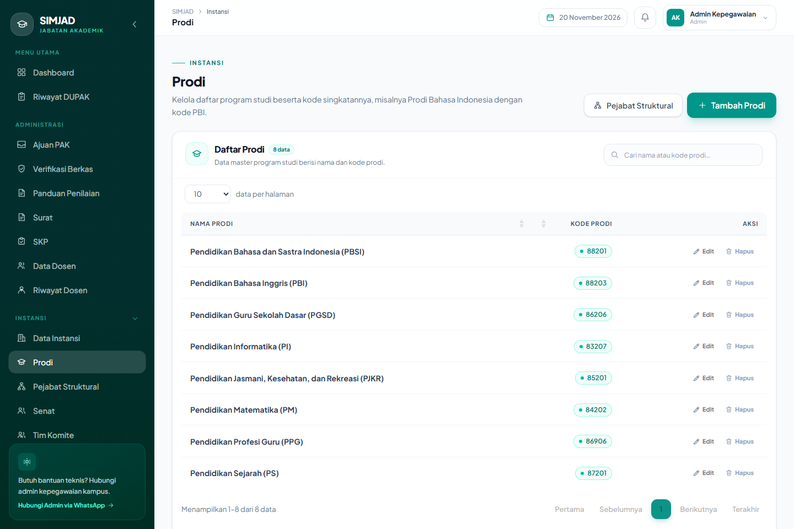
Gambar 38. Daftar Prodi: delapan data contoh, kolom Nama Prodi, Kode Prodi, dan Aksi.
Kartu Daftar Prodi menampilkan lencana jumlah data dan keterangan "Data master program studi
berisi nama dan kode prodi." Kolom tabel: NAMA PRODI, KODE PRODI, AKSI. Kode prodi
tampil sebagai lencana kecil (contoh 88201, PBI). Kotak pencarian berplaceholder "Cari nama
atau kode prodi…".
Di bawah tabel terdapat keterangan jumlah baris, misalnya "Menampilkan 1–8 dari 8 data", serta tombol halaman Pertama, Sebelumnya, nomor halaman, Berikutnya, dan Terakhir.
Menambah prodi: tekan + Tambah Prodi, lalu isi:
Contoh: Bahasa Indonesia, maksimal 150 karakter.Contoh: PBI, maksimal 20 karakter. Keterangan: "Gunakan
singkatan huruf kapital. Kode prodi harus unik dan otomatis disimpan dalam huruf kapital."Tekan Simpan Prodi. Untuk mengubah, tekan Edit pada baris, ubah isian, lalu Simpan Perubahan. Untuk menghapus, tekan Hapus dan setujui konfirmasi.
Bila tabel kosong, muncul "Belum ada data prodi" beserta ajakan menambah data pertama.
Menu Instansi → Pejabat Struktural. Keterangan halaman: "Susunan pejabat struktural instansi berdasarkan jabatan struktural dan data dosen."
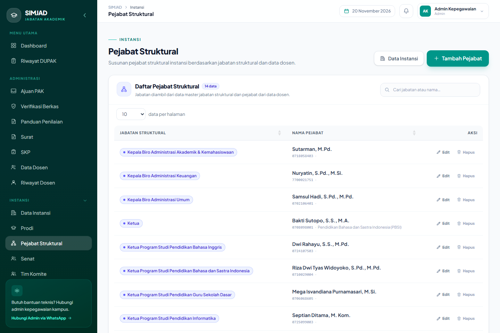
Gambar 35. Daftar Pejabat Struktural: kolom Jabatan Struktural, Nama Pejabat, dan Aksi.
Kartu Daftar Pejabat Struktural menampilkan lencana jumlah data (contoh 14 data) dan keterangan "Jabatan diambil dari data master jabatan struktural dan pejabat dari data dosen."
Tabel memakai kolom JABATAN STRUKTURAL, NAMA PEJABAT, AKSI:
Kotak pencarian berplaceholder "Cari jabatan atau nama…". Tombol Data Instansi di kanan atas kembali ke halaman 11.1.
Menambah pejabat:
Bila daftar masih kosong, muncul "Belum ada data struktur instansi" dengan tombol Tambah Pejabat di dalamnya.
Catatan — Satu jabatan struktural hanya boleh diisi satu dosen. Untuk mengganti pejabat, sunting baris yang ada (Edit) atau hapus lebih dulu, jangan menambah baris baru dengan jabatan yang sama.
Menu Instansi → Senat. Keterangan halaman: "Susunan anggota senat instansi beserta jabatannya, dipilih dari data dosen aktif."
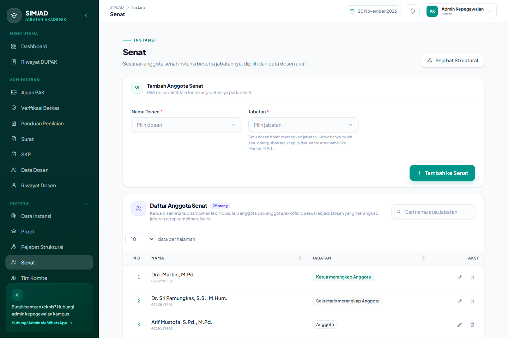
Gambar 36. Senat: formulir Tambah Anggota Senat di atas, Daftar Anggota Senat di bawah.
"Pilih dosen aktif, lalu tentukan jabatannya pada senat."
| Isian | Keterangan |
|---|---|
| Nama Dosen * | Dropdown Pilih dosen dengan pencarian "Cari nama dosen…". Bila tidak ada pilihan, muncul "Belum ada dosen aktif yang dapat dipilih." |
| Jabatan * | Dropdown Pilih jabatan: Ketua, Sekretaris, Anggota, Anggota/Ex Officio. |
| Merangkap Jabatan (opsional) | Dropdown Tidak merangkap. Keterangan: "Isi bila dosen merangkap jabatan lain, mis. Ketua merangkap Anggota." Pilihan mengikuti jabatan utama dan tidak menawarkan jabatan yang sama. |
Keterangan di bawah dropdown jabatan: "Satu dosen boleh merangkap jabatan. Ketua hanya boleh satu orang; ubah atau hapus dulu ketua atas nama …" — nama yang disebut adalah ketua senat saat ini. Opsi Ketua otomatis dinonaktifkan dan diberi akhiran — sudah terisi selama ketua belum diganti. Ketua tidak dapat dipilih sebagai jabatan rangkapan.
Tekan + Tambah ke Senat. Saat menyunting, formulir berjudul Edit Anggota Senat dan tombolnya Simpan Perubahan.
Lencana jumlah anggota (contoh 29 orang) disertai keterangan: "Ketua & sekretaris ditampilkan lebih dulu, lalu anggota dan anggota/ex officio sesuai abjad. Dosen yang merangkap jabatan tetap tampil satu baris." Kotak pencarian berplaceholder "Cari nama atau jabatan…".
Kolom: NO, NAMA (nama dosen dan NIDN), JABATAN, AKSI (ikon pensil dan tempat sampah). Jabatan tampil sebagai lencana berwarna: hijau untuk Ketua merangkap Anggota atau Ketua, abu-abu untuk Sekretaris merangkap Anggota, dan sebagainya. Bila kosong: "Belum ada anggota senat".
Anggota senat yang terdaftar di sini muncul pada pilihan Anggota Senat di formulir BAP Senat (Bab 10.1), dan urutan pilihan di BAP menentukan urutan nama pada daftar hadir cetak.
Menu Instansi → Tim Komite. Keterangan halaman: "Susunan anggota tim komite instansi beserta jabatannya, dipilih dari data dosen aktif."
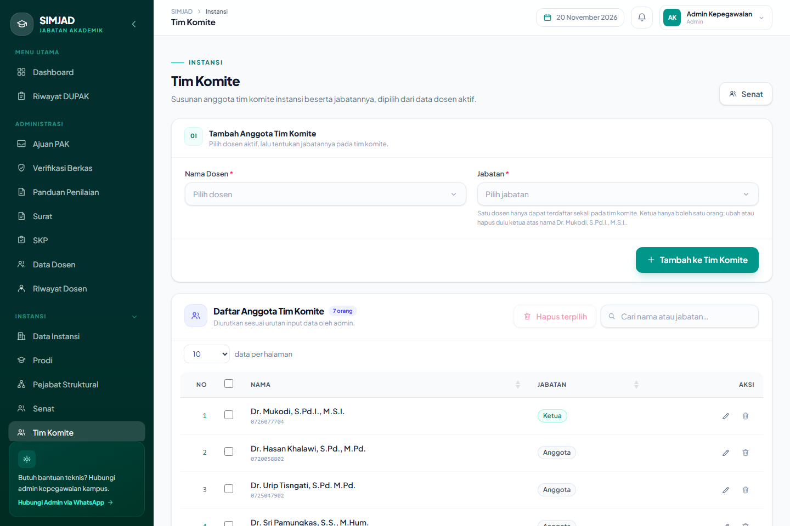
Gambar 37. Tim Komite: formulir Tambah Anggota Tim Komite dan daftar dengan kotak centang.
Struktur halaman sama dengan Senat, dengan beberapa perbedaan:
Anggota tim komite dipakai pada BAKI (Berita Acara Komite Integritas Akademik) di menu Surat.
Menu Administrasi → Panduan Penilaian. Keterangan halaman: "Acuan penilaian angka kredit yang dibaca TIM PAK. Unggah berkas PDF atau kirim link berkas, lalu periksa hasilnya pada pratinjau di bawah."
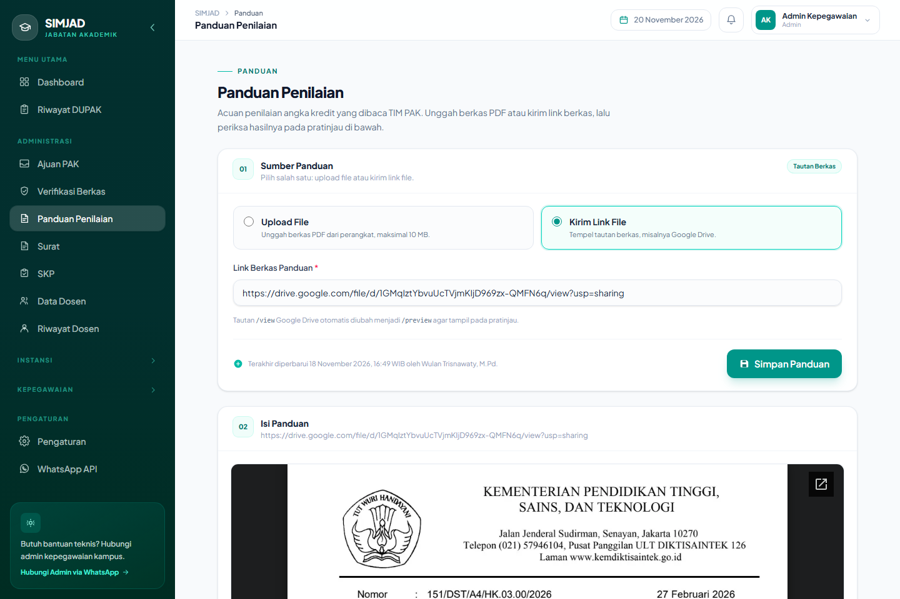
Gambar 39. Panduan Penilaian: bagian 01 Sumber Panduan dengan mode Kirim Link File aktif.
"Acuan penilaian angka kredit yang dipakai TIM PAK. Isi panduan ditampilkan pada pratinjau di bawah halaman ini." Pilih salah satu sumber:
10 MB.https://drive.google.com/file/d/xxxxxxxx/view. Keterangan: "Tautan
/view Google Drive otomatis diubah menjadi /preview agar tampil pada pratinjau."Di bawah formulir tampil keterangan waktu pembaruan terakhir, misalnya "Terakhir diperbarui 18 November 2026, 16.49 WIB oleh Wulan Trisnawaty, M.Pd." Tekan Simpan Panduan untuk menyimpan. Lencana Tautan Berkas di kanan atas bagian menunjukkan jenis sumber yang sedang dipakai.
Bagian ini menampilkan alamat berkas dan pratinjau dokumen di dalam halaman. Bila pratinjau kosong, muncul saran: "Sebagian tautan membatasi tampilan di dalam halaman. Bila pratinjau kosong, buka tautannya di tab baru." Tombol Hapus Panduan (dengan konfirmasi Hapus panduan penilaian?) mengosongkan panduan; setelah itu muncul ajakan "Unggah berkas PDF atau kirim link berkas pada formulir di atas agar TIM PAK dapat membacanya."
Catatan — Panduan ini dibaca TIM PAK dari menu Panduan Penilaian di ruang TIM PAK (Bab 12). Perubahan langsung terlihat oleh semua penilai, jadi simpan hanya berkas yang sudah final.
Menu Pengaturan pada kelompok PENGATURAN di sidebar. Keterangan halaman: "Kelola token GitHub untuk pembaruan aplikasi, bersihkan cache, jalankan migrasi tabel, buat symlink storage, serta backup dan import database. Setiap tindakan dicatat pada terminal log di bawah."
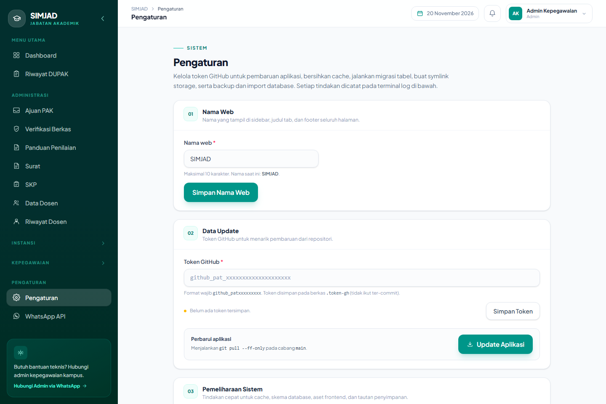
Gambar 40. Pengaturan: bagian 01 Nama Web dan 02 Data Update.
Halaman ini terdiri atas lima bagian bernomor.
"Nama yang tampil di sidebar, judul tab, dan footer seluruh halaman." Isian Nama web * dengan
placeholder Contoh: Athena, maksimal 10 karakter. Keterangan di bawahnya menyebut nama yang
sedang dipakai, misalnya "Nama saat ini: SIMJAD". Tekan Simpan Nama Web.
"Token GitHub untuk menarik pembaruan dari repositori."
github_pat_xxxxxxxxxxxxxxxxxxxx. Keterangan: "Format wajib
github_patxxxxxxxxx. Token disimpan pada berkas .token-gh (tidak ikut ter-commit)."git pull --ff-only pada cabang main." Tekan
Update Aplikasi."Tindakan cepat untuk cache, skema database, aset frontend, dan tautan penyimpanan." Empat baris tindakan:
| Tindakan | Perintah yang dijalankan | Tombol |
|---|---|---|
| Clear cache | php artisan optimize:clear |
Bersihkan Cache |
| Migrasi tabel | php artisan migrate --force |
Migrasi Tabel (konfirmasi "Jalankan migrasi tabel database sekarang?") |
| Symlink storage | php artisan storage:link --force |
Buat Symlink. Lencana Tertaut (hijau) atau Belum (kuning) menunjukkan status tautan. |
| Build aset (CSS & JS) | npm run build — "Lakukan setelah menarik pembaruan aplikasi." |
Build Aset |
"Unduh salinan seluruh tabel, atau pulihkan database dari berkas .sql."
backup-YYYYMMDD-HHMMSS.sql." Tekan Backup Database dan setujui konfirmasi Backup
database? Selama proses berjalan muncul bilah kemajuan; setelah selesai tersedia tautan Unduh
ulang hasil backup..sql, maksimal 100 MB). Keterangan: "Berkas
dijalankan bertahap sehingga tabel yang namanya sama akan ditimpa." Tekan Import Database dan
setujui konfirmasi Import database?"Setiap tindakan dicatat pada terminal log di bawah." Bagian ini menampilkan jumlah tindakan (contoh "3 tindakan") dan isi log sesi berjalan. Bila belum ada, muncul "belum ada tindakan pada sesi ini." Tombol Hapus log mengosongkan seluruh isi terminal log.
Peringatan — Import Database menimpa tabel yang namanya sama, dan Hapus Semua Data menghapus permanen seluruh data dosen. Selalu tekan Backup Database lebih dulu. Kedua tindakan tidak dapat dibatalkan.
Menu Pengaturan → WhatsApp API. Keterangan halaman: "Hubungkan aplikasi ke WhatsApp gateway, pantau status koneksi secara realtime, dan uji pengiriman pesan." Lencana di kanan atas menunjukkan keadaan konfigurasi, misalnya Gateway tersimpan.
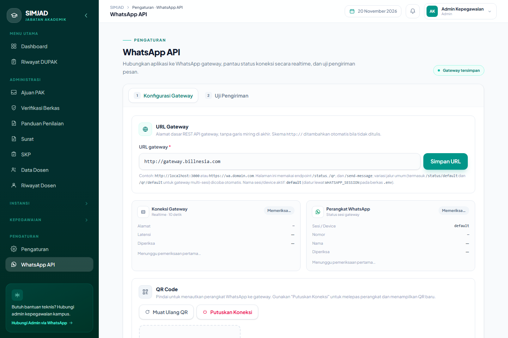
Gambar 41. WhatsApp API tab Konfigurasi Gateway: URL gateway, kartu status, dan QR Code.
Halaman memiliki dua tab: 1 Konfigurasi Gateway dan 2 Uji Pengiriman.
http://
ditambahkan otomatis bila tidak ditulis." Placeholder http://localhost:3000. Keterangan
tambahan: halaman memakai endpoint /status, /qr, dan /send-message; variasi jalur umum
(termasuk /status/default dan /qr/default untuk gateway multi-sesi) dicoba otomatis. Nama
sesi/device aktif mengikuti WHATSAPP_SESSION pada berkas .env. Tekan Simpan URL.default),
Nomor, Nama, dan Diperiksa.Judul bagian Kirim Pesan Uji dengan keterangan "Pesan benar-benar dikirim ke nomor tujuan melalui gateway yang tersimpan."
| Isian | Keterangan |
|---|---|
| Nomor tujuan * | Placeholder 0812-3456-7890. Nomor berawalan 0 diubah menjadi 62 sebelum dikirim. |
| Pesan | Placeholder Contoh: Uji koneksi WhatsApp API Athena berhasil. |
Tekan Kirim Pesan Uji; hasil pengiriman tampil pada tab yang sama.
Catatan — Bila gateway belum menyala, kartu status tetap menampilkan Memeriksa… dan QR tidak muncul. Periksa alamat gateway lebih dulu, lalu tekan Muat Ulang QR.
TIM PAK (Tim Penilai Angka Kredit) bekerja pada satu tugas: memberi angka kredit atas setiap butir kegiatan yang diajukan dosen. Menu yang tersedia hanya Dashboard, Pengajuan Masuk, dan Panduan Penilaian.
Gambar 43. Dashboard TIM PAK: banner RUANG TIM PAK, lima kartu ringkasan, dan tabel pengajuan masuk (gambar yang sama dipakai pada Bab 3.3).
Halaman dibuka dengan banner hijau bertanda RUANG TIM PAK dan sapaan "Selamat pagi, Wulan!" disertai ajakan "Tinjau dan nilai usulan angka kredit dosen yang masuk." Di kanan banner tampil kotak PERIODE AKTIF (contoh 2026) dan tombol Pengajuan Masuk.
Lima kartu ringkasan:
| Kartu | Arti |
|---|---|
| Total Pengajuan (label Semua) | Seluruh ajuan DUPAK dosen. |
| Belum Dinilai (Proses) | "Menunggu penilaian TIM PAK". |
| Disetujui (Final) | "Ajuan yang telah disetujui". |
| Perlu Perbaikan (Revisi) | "Dikembalikan ke dosen". |
| Ditolak (Tolak) | "DUPAK ditolak admin". |
Di bawahnya, kartu Pengajuan DUPAK Masuk dengan lencana jumlah data dan keterangan "Daftar
pengajuan DUPAK yang masuk dari dosen untuk dinilai." Tersedia kotak pencarian "Cari dosen,
periode…", filter Semua status, dan pilihan 10 / 25 / 50 / 100 data per halaman. Kolom:
DOSEN (nama, NIDN, dan tanda — bila prodi kosong), PERIODE, STATUS, DIAJUKAN, dan
AKSI berisi tombol Nilai.
Menu Penilaian → Pengajuan Masuk. Judul halaman Pengajuan DUPAK Masuk, keterangan: "Daftar usulan angka kredit yang dikirim dosen. Buka salah satu baris untuk mengisi kolom angka kredit baru."
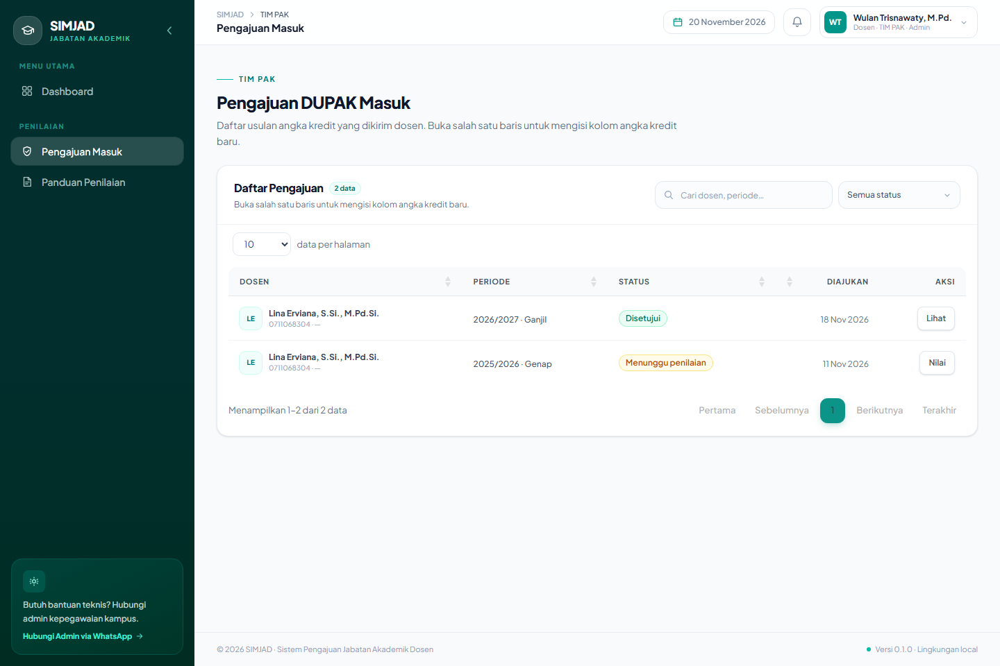
Gambar 44. Pengajuan Masuk: dua ajuan contoh, status Disetujui dan Menunggu penilaian.
Kartu Daftar Pengajuan memuat lencana jumlah data dan pengingat "Buka salah satu baris untuk mengisi kolom angka kredit baru." Alat bantu yang sama seperti dashboard: pencarian "Cari dosen, periode…", filter Semua status, dan pilihan jumlah baris per halaman.
Tombol pada kolom AKSI menyesuaikan keadaan ajuan:
| Keadaan ajuan | Tombol |
|---|---|
| Belum dinilai (Menunggu penilaian) | Nilai |
| Sudah dinilai, belum diputuskan | Lihat / Ubah |
| Sudah Disetujui admin (nilai terkunci) | Lihat |
Klik judul kolom DOSEN, PERIODE, STATUS, atau DIAJUKAN untuk mengurutkan. Bila tidak ada data, muncul "Belum ada pengajuan masuk".
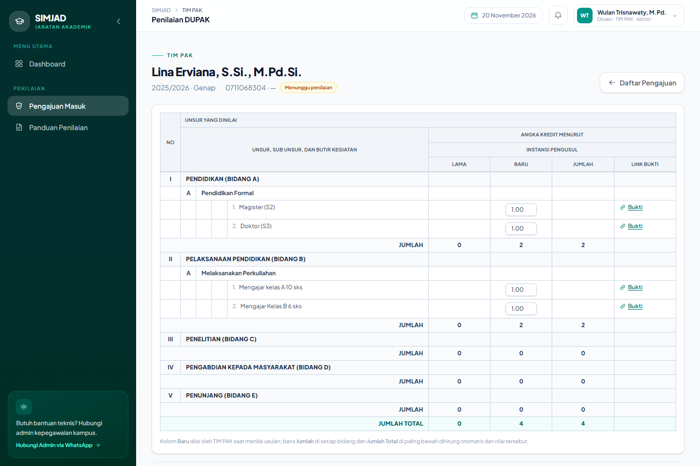
Gambar 45. Halaman penilaian: rekap bergaya formulir DUPAK dengan kolom isian Baru.
Halaman Penilaian DUPAK menampilkan nama dosen sebagai judul, lalu baris keterangan berisi periode (contoh 2025/2026 · Genap), NIDN, prodi, dan lencana status (contoh Menunggu penilaian). Tombol ← Daftar Pengajuan di kanan atas kembali ke daftar.
Tabel penilaian disusun seperti formulir DUPAK:
1.00), dan
kolom JUMLAH terisi otomatis.Keterangan di bawah tabel: "Kolom Baru diisi oleh TIM PAK saat menilai usulan; baris Jumlah di setiap bidang dan Jumlah Total di paling bawah dihitung otomatis dari nilai tersebut."
Langkah menilai:
Setelah disimpan, dosen melihat nilai tersebut pada tab Review pengajuannya dan dapat menekan Ajukan Dupak (Bab 5.6).
Peringatan — Nilai yang sudah tersimpan langsung terlihat oleh dosen. Bila ajuan sudah Disetujui admin, halaman ini berubah menjadi hanya-baca: keterangan "DUPAK periode ini sudah disetujui admin. Nilai terkunci dan halaman ini hanya untuk dilihat." dan tombol Update Nilai dinonaktifkan.
Menu Penilaian → Panduan Penilaian menampilkan judul Panduan Penilaian dengan keterangan "Acuan penilaian angka kredit yang dipakai TIM PAK. Isi panduan ditampilkan pada pratinjau di bawah halaman ini." Isinya berasal dari berkas yang diunggah admin pada Bab 11.6.
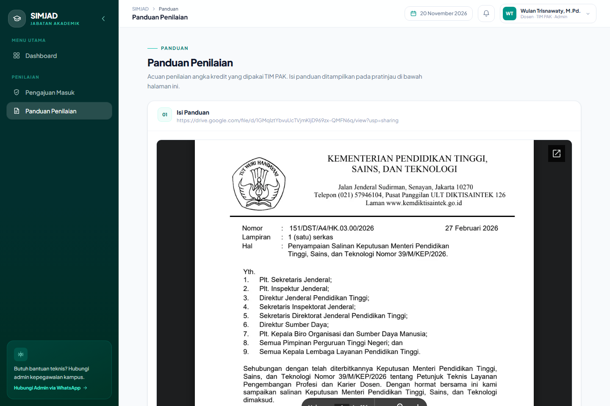
Gambar 46. Panduan Penilaian di ruang TIM PAK: kartu Isi Panduan dan pratinjau dokumen acuan.
Kartu 01 Isi Panduan menampilkan alamat berkas atau tautan yang dipakai, lalu pratinjau dokumen di bawahnya. Ikon di sudut kanan atas pratinjau membuka dokumen pada tab baru — berguna bila ingin memperbesar atau mencetak. Gunakan halaman ini sebagai rujukan angka kredit sebelum mengisi kolom Baru.
Bila admin belum mengisi panduan, halaman menampilkan ajakan agar admin mengunggah berkas lebih dulu.
Sasaran Kinerja Pegawai (SKP) dinilai lewat enam unsur perilaku kerja. Bab ini menjelaskan dua sisi yang saling berhadapan: dosen yang menerima penilaian (menu SKP-Dosen) dan dosen yang memberi penilaian karena ditugaskan admin sebagai Pejabat Penilai atau Atasan Pejabat Penilai (menu Usulan SKP).
Menu SKP-Dosen menampilkan judul SKP-Dosen dengan keterangan "Hasil penilaian SKP dari Pejabat Penilai untuk Anda. Ajukan keberatan bila ada nilai yang tidak sesuai, atau setujui bila sudah sesuai."
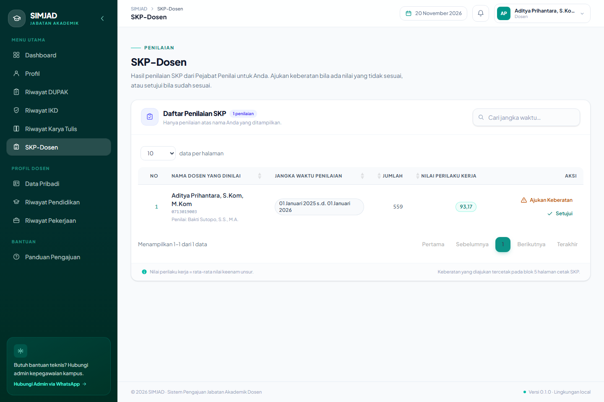
Gambar 47. SKP-Dosen: satu baris penilaian dengan tombol Ajukan Keberatan dan Setujui.
Kartu Daftar Penilaian SKP berlabel jumlah penilaian dan keterangan "Hanya penilaian atas nama Anda yang ditampilkan." Kotak pencarian "Cari jangka waktu…" dan pilihan 10 / 25 / 50 / 100 data per halaman tersedia di atas tabel.
Kolom tabel: NO, NAMA DOSEN YANG DINILAI (nama, NIDN, dan "Penilai: …"), JANGKA WAKTU
PENILAIAN (contoh 01 Januari 2025 s.d. 01 Januari 2026), JUMLAH (contoh 559), NILAI
PERILAKU KERJA (lencana angka, contoh 93,17), dan AKSI.
Isi kolom AKSI bergantung pada keadaan penilaian:
| Keadaan | Tampilan pada kolom AKSI |
|---|---|
| Belum dinilai Pejabat Penilai | Teks "Menunggu penilaian". |
| Sudah dinilai, belum disetujui | Ajukan Keberatan dan Setujui. |
| Keberatan sudah diajukan | Ubah Keberatan + "Keberatan diajukan 12 Maret 2026". |
| Sudah disetujui dosen | Lencana Disetujui dan tombol Batalkan Persetujuan. |
| Sudah disetujui atasan penilai | Lencana Disetujui + "Sudah disetujui atasan penilai". |
Dua catatan di kaki kartu: "Nilai perilaku kerja = rata-rata nilai keenam unsur." dan "Keberatan yang diajukan tercetak pada blok 5 halaman cetak SKP."
Tekan Ajukan Keberatan pada baris penilaian. Halaman Ajukan Keberatan SKP terbuka dengan tautan ← Kembali ke SKP-Dosen di kiri atas dan keterangan "Ajukan keberatan atas nilai SKP yang Anda terima beserta tanggal pengajuannya. Keberatan tercetak pada blok 5 halaman cetak SKP."
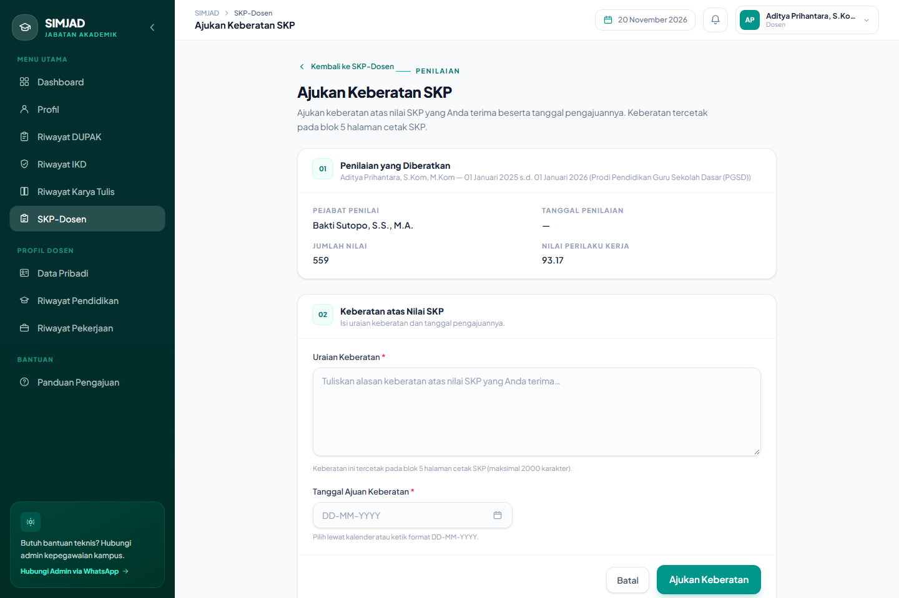
Gambar 48. Formulir keberatan: ringkasan penilaian (01) dan isian keberatan (02).
Halaman dibagi dua blok bernomor:
DD-MM-YYYY, "Pilih lewat kalender atau ketik
format DD-MM-YYYY."Tekan Ajukan Keberatan untuk menyimpan, atau Batal untuk kembali tanpa mengubah apa pun. Setelah tersimpan, halaman daftar menampilkan tautan Ubah Keberatan beserta tanggal keberatan.
Catatan — Satu penilaian hanya punya satu keberatan. Menekan Ubah Keberatan memperbarui uraian dan tanggal yang sama, bukan menambah keberatan baru.
Setelah keberatan diajukan, Pejabat Penilai menulis tanggapan (13.4), lalu dosen dapat menekan Setujui. Tombol ini meminta konfirmasi "Setujui penilaian SKP periode 2025/2026 tanpa keberatan?" — persetujuan mengunci nilai dari perubahan Pejabat Penilai. Bila belum disetujui atasan penilai, persetujuan masih dapat dibatalkan lewat Batalkan Persetujuan (konfirmasi: "Batalkan persetujuan penilaian SKP periode 2025/2026? Nilai dapat diubah kembali oleh Pejabat Penilai.").
Menu Usulan SKP dipakai bila admin menugaskan Anda sebagai Pejabat Penilai atau Atasan Pejabat Penilai SKP. Keterangannya: "Daftar dosen yang perlu Anda nilai perilaku kerjanya sebagai Pejabat Penilai SKP, atau yang menunggu keputusan keberatan dan persetujuan Anda sebagai Atasan Pejabat Penilai."
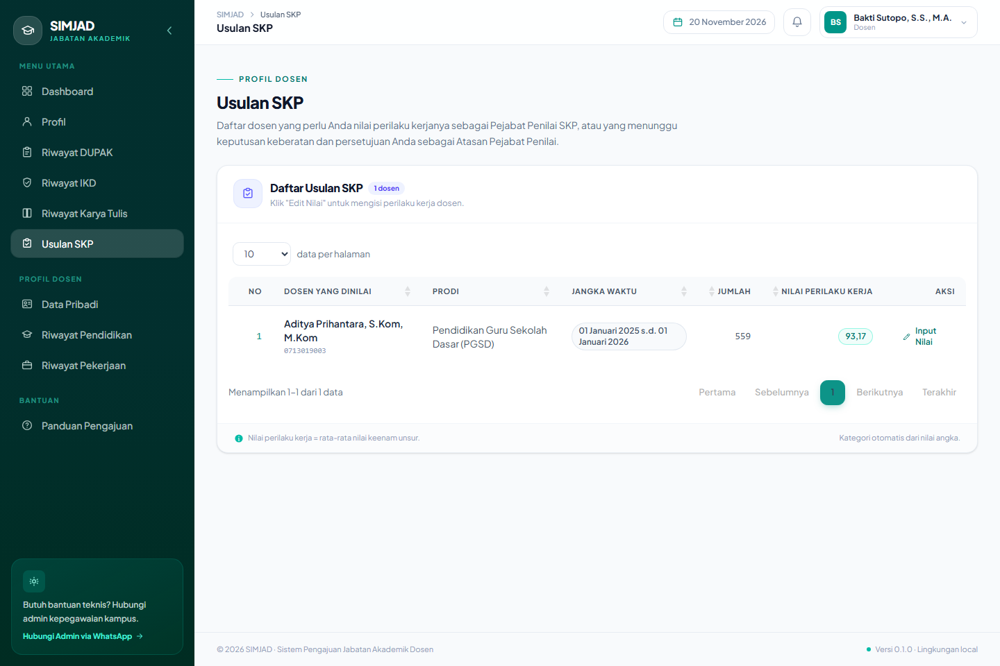
Gambar 49. Usulan SKP: daftar dosen yang menunggu penilaian, dengan tombol Input Nilai.
Kartu Daftar Usulan SKP berlabel jumlah dosen dan pengingat "Klik "Edit Nilai" untuk mengisi
perilaku kerja dosen." Kolom tabel: NO, DOSEN YANG DINILAI (nama + NIDN), PRODI,
JANGKA WAKTU (contoh 01 Januari 2025 s.d. 01 Januari 2026), JUMLAH (contoh 559), NILAI
PERILAKU KERJA (lencana angka, contoh 93,17), dan AKSI.
Isi kolom AKSI:
| Peran Anda pada SKP itu | Tindakan yang tampil |
|---|---|
| Pejabat Penilai, belum disetujui dosen | Input Nilai, dan Tanggapan Keberatan / Ubah Tanggapan bila dosen mengajukan keberatan. |
| Pejabat Penilai, dosen sudah menyetujui | Lencana Disetujui dosen (nilai terkunci). |
| Atasan Pejabat Penilai | Keputusan atas Keberatan / Ubah Keputusan bila syaratnya terpenuhi, serta isian tanggal persetujuan + tombol Setujui. |
Bila belum ada penugasan, muncul "Belum ada dosen yang perlu dinilai" dengan keterangan "Admin akan menugaskan Anda sebagai Pejabat Penilai SKP."
Klik Input Nilai (atau Edit Nilai). Formulir 01 Nilai Perilaku Kerja terbuka di atas tabel, memuat nama dosen, periode, dan prodi. Aturan kategori tertera di dalam formulir: ≥86 Sangat Baik · 71–85 Baik · 56–70 Cukup · ≤55 Kurang. "Jumlah dan nilai perilaku kerja (rata-rata nilai) dihitung otomatis."
Enam isian wajib, masing-masing bilangan bulat 0–100:
| Unsur | Keterangan |
|---|---|
| Orientasi Pelayanan | Sikap terhadap pelayanan. |
| Integritas | Kejujuran dan konsistensi. |
| Komitmen | Kesetiaan pada tugas dan organisasi. |
| Disiplin | Ketaatan pada aturan waktu dan kerja. |
| Kerjasama | Kemampuan bekerja bersama. |
| Kepemimpinan | Kemampuan memimpin dan mengarahkan. |
Terakhir isi Tanggal Penilaian (plaseholder DD-MM-YYYY) — tanggal ini tercetak pada blok 9
halaman cetak SKP ("DIBUAT TANGGAL, ..."). Tekan Simpan Nilai, atau Batal untuk menutup
formulir.
Peringatan — Bila ada isian yang salah, muncul kotak "Periksa kembali data Anda." dengan "Terdapat N isian yang perlu diperbaiki sebelum data dapat disimpan." Pesan yang mungkin muncul: "Nilai wajib diisi untuk seluruh unsur perilaku kerja.", "Nilai angka harus antara 0 sampai 100.", dan "Tanggal penilaian harus berformat DD-MM-YYYY."
Setelah disimpan, dosen menerima notifikasi WhatsApp dan nilai muncul pada menu SKP-Dosen miliknya untuk disetujui atau diberatkan (13.1–13.2).
Bila dosen mengajukan keberatan, tautan Tanggapan Keberatan muncul pada kolom AKSI. Halaman Tanggapan Keberatan SKP berisi keterangan "Tanggapi keberatan yang diajukan dosen beserta tanggal tanggapan. Tanggapan tercetak pada blok 6 halaman cetak SKP."
DD-MM-YYYY).Sebagai Atasan Pejabat Penilai, Anda menutup rangkaian SKP:
DD-MM-YYYY).
Tombolnya Simpan Keputusan / Perbarui Keputusan. Keputusan tercetak pada blok 7 halaman
cetak SKP.DD-MM-YYYY, terisi tanggal hari ini) pada kolom
AKSI, lalu tekan Setujui. Persetujuan baru bisa dilakukan setelah dosen menyetujui
penilaian, dan tercetak pada blok 11 halaman cetak SKP.Setelah atasan menyetujui, dosen tidak dapat lagi membatalkan persetujuannya dan Pejabat Penilai tidak dapat mengubah nilai.
Bab ini merangkum seluruh status yang mungkin Anda temui beserta siapa yang berwenang mengubahnya. Gunakan bab ini saat lencana status pada layar tidak Anda pahami.
| Status di layar | Arti | Yang bertindak berikutnya |
|---|---|---|
| Menunggu penugasan admin | Kegiatan sudah diajukan dosen, tetapi admin belum menugaskan TIM PAK. | Admin (menugaskan TIM PAK). |
| Menunggu penilaian | Sudah sampai di meja TIM PAK, angka kredit belum diisi. | TIM PAK (Bab 12.3). |
| Sudah dinilai | TIM PAK selesai mengisi kolom Baru. | Dosen — memeriksa hasil lalu menekan Ajukan Dupak. |
| Diajukan DUPAK | Dosen sudah mengajukan usulan; menunggu keputusan admin. | Admin (Bab 9.2). |
| Disetujui | Admin menyetujui; angka kredit terkunci dan DUPAK siap dicetak. | Dosen (mencetak DUPAK). |
| Butuh Perbaikan | Dikembalikan admin dengan catatan; entri masih dapat diubah. | Dosen (memperbaiki lalu mengajukan ulang). |
| Ditolak | Usulan dihentikan admin dengan alasan tertulis. | Tidak ada — periode dapat diajukan lagi pada periode berikutnya. |
Status Diajukan DUPAK, Disetujui, Butuh Perbaikan, dan Ditolak dihitung sebagai tahap DUPAK, sehingga periodenya tampil pada menu Riwayat DUPAK — bukan lagi pada daftar pengajuan kegiatan.
| Status di layar | Arti | Yang bertindak berikutnya |
|---|---|---|
| Belum diajukan | Berkas belum diunggah, atau masih berupa draf. | Dosen (mengunggah berkas). |
| Menunggu verifikasi | Berkas sudah dikirim dan menunggu pemeriksaan admin. | Admin (Bab 9.1). |
| Diterima | Berkas lolos verifikasi. | Dosen (melanjutkan pengisian kegiatan). |
| Ditolak | Berkas dikembalikan dengan catatan per jenis berkas. | Dosen (mengunggah ulang). |
Status BKD dan IKD disimpan terpisah, lalu status ajuan keseluruhan diturunkan darinya: bila salah satu Ditolak maka ajuan Ditolak; bila ada yang Menunggu verifikasi maka ajuan Menunggu verifikasi; bila masih ada yang Belum diajukan maka ajuan Belum diajukan.
| Status di layar | Arti |
|---|---|
| Draft | Baru disimpan, belum dikirim. |
| Diajukan | Sudah dikirim untuk diperiksa. |
| Diverifikasi | Lolos pemeriksaan berkas. |
| Disetujui | Usulan jabatan disetujui. |
| Ditolak | Usulan jabatan ditolak. |
| Keadaan | Penanda pada layar | Siapa yang bertindak |
|---|---|---|
| Belum dinilai | "Menunggu penilaian" pada SKP-Dosen | Pejabat Penilai (Bab 13.3). |
| Sudah dinilai | Lencana angka pada NILAI PERILAKU KERJA; tombol Ajukan Keberatan dan Setujui muncul | Dosen (Bab 13.2). |
| Keberatan diajukan | Ubah Keberatan + "Keberatan diajukan …"; tombol Tanggapan Keberatan di sisi penilai | Pejabat Penilai (Bab 13.4). |
| Disetujui dosen | Lencana Disetujui pada SKP-Dosen, Disetujui dosen pada Usulan SKP | Atasan Pejabat Penilai (Bab 13.5). |
| Diputuskan atasan | Ubah Keputusan pada kolom AKSI | Atasan Pejabat Penilai (menyetujui). |
| Selesai | "Sudah disetujui atasan penilai" | Tidak ada — dokumen siap dicetak admin. |
Nilai SKP terkunci selama dosen sudah menyetujui. Pejabat Penilai baru dapat mengubahnya kembali bila dosen menekan Batalkan Persetujuan — dan pembatalan itu tidak tersedia lagi setelah atasan menyetujui.
| Tindakan | Dosen | TIM PAK | Admin |
|---|---|---|---|
| Mengisi entri kegiatan | ✔ | — | — |
| Mengajukan ke TIM PAK | ✔ | — | — |
| Menugaskan TIM PAK | — | — | ✔ |
| Mengisi angka kredit (Baru) | — | ✔ | — |
| Mengajukan DUPAK | ✔ | — | — |
| Menyetujui / mengembalikan / menolak DUPAK | — | — | ✔ |
| Mencetak DUPAK dan lampirannya | ✔ | — | ✔ |
| Verifikasi BKD dan IKD | mengunggah | — | ✔ memutuskan |
| Menilai SKP | menerima/menyanggah | — | ✔ (Pejabat Penilai ditunjuk admin) |
| Mengubah data instansi dan pengaturan | — | — | ✔ |
Catatan — Satu akun dapat memegang lebih dari satu peran. Bila tombol yang Anda butuhkan tidak tampil, periksa peran aktif pada menu akun di kanan atas (Bab 2.3) — kemungkinan Anda sedang berada pada peran yang berbeda.
Saya lupa password. Bagaimana mengatasinya?
Aplikasi tidak menyediakan pemulihan mandiri. Pada halaman masuk, klik Lupa password? — tautan itu membuka aplikasi surel dengan alamat admin dan subjek "Bantuan akun SIMJAD" (nama web mengikuti Pengaturan → Nama Web). Anda juga dapat memakai tombol Hubungi Admin via WhatsApp di bagian bawah sidebar. Admin akan mengatur ulang kata sandi Anda dari menu Administrasi → Data Dosen.
NIDN saya ditolak saat masuk.
Pastikan yang diketik adalah NIDN (bukan NIP atau surel) dan tanpa spasi. Bila tetap gagal, akun Anda mungkin belum dibuat admin — minta admin menambahkannya lewat Data Dosen atau Import Data Dosen (Bab 8).
Menu saya tidak selengkap rekan saya.
Menu ditentukan oleh peran aktif. Bila akun Anda memegang lebih dari satu peran, halaman Pilih peran muncul setelah masuk (Gambar 42, Bab 2.3). Pilih peran lain untuk melihat menunya.
Halaman menampilkan "403" atau "Anda tidak memiliki akses".
Anda membuka halaman milik peran lain — misalnya tautan lama TIM PAK dibuka saat peran Dosen aktif. Kembali ke Dashboard lalu ganti peran.
Tombol pengisian kegiatan tidak muncul pada periode tertentu.
Periode yang sudah Disetujui admin terkunci: tombol Ajukan ke TIM PAK tidak aktif dan nilai tidak dapat diubah lagi. Gunakan periode berikutnya untuk kegiatan baru. Untuk periode yang belum ada sama sekali, buat lewat Pengajuan Baru (Bab 5.2).
Bukti kegiatan ditolak saat disimpan.
Kolom Link Bukti hanya menerima alamat lengkap yang dimulai http:// atau https://. Unggah
berkas bukti ke penyimpanan daring (Google Drive, OneDrive, dan sejenisnya), atur agar dapat dibuka
publik, lalu tempelkan tautannya. Jangan menempelkan tautan folder lokal seperti D:\….
Mengapa kolom angka kredit tidak bisa saya isi?
Kolom Baru hanya untuk TIM PAK. Dosen melihat angka tersebut setelah TIM PAK menyimpan penilaian (Bab 12.3); sebelum itu kolom Baru masih kosong dan yang tampil hanya nilai Lama.
Status berhenti di "Menunggu penugasan admin".
Admin belum menunjuk TIM PAK untuk periode Anda. Hubungi admin kepegawaian; setelah penugasan diberikan, status berubah menjadi Menunggu penilaian dan ajuan muncul pada Pengajuan Masuk milik TIM PAK.
Saya sudah menekan "Ajukan Dupak", tetapi ada yang salah.
Selama admin belum memutuskan, ajuan berstatus Diajukan DUPAK dan belum dapat ditarik kembali. Bila admin mengembalikannya sebagai Butuh Perbaikan, perbaiki entri lalu ajukan ulang. Bila Ditolak, alasannya tercatat pada kolom catatan dan periode itu dianggap selesai — usulan berikutnya dibuat pada periode lain.
DUPAK saya sudah "Disetujui" tetapi angka kredit ingin diubah.
Nilai terkunci setelah persetujuan admin — termasuk bagi TIM PAK. Perubahan hanya mungkin melalui admin, dan praktisnya diusulkan pada periode berikutnya.
Unggahan BKD saya gagal.
Berkas harus PDF dan maksimal 3 MB. Untuk IKD batasnya 5 MB. Kompres berkas terlebih dahulu, atau pindai ulang dengan resolusi lebih rendah. Nama berkas sebaiknya tanpa tanda baca khusus.
Status BKD "Diterima" tetapi IKD masih "Belum diajukan".
Kedua berkas diperiksa terpisah. Status ajuan keseluruhan baru menjadi Diterima bila keduanya lolos. Unggah IKD, lalu kirim berkasnya untuk diverifikasi.
Saya ingin mengganti berkas yang sudah diajukan.
Berkas berstatus Menunggu verifikasi tidak dapat diganti. Tunggu keputusan admin; bila Ditolak, unggahan baru terbuka beserta catatan alasannya.
Cetakan DUPAK terpotong atau kolomnya berdesakan.
Gunakan orientasi Landscape, ukuran A4, dan skala 100% (jangan Fit to page). Matikan opsi header/footer peramban agar nomor halaman tidak menimpa tabel.
Tombol cetak tidak ada pada DUPAK saya.
Tombol Cetak PDF tersedia pada tab Riwayat Ajuan di menu Riwayat DUPAK, dan tombol Cetak Dupak ke PDF pada panel Review (Bab 5.7). Bila rekap yang terbuka masih kosong pada kolom Baru, artinya TIM PAK belum menyimpan nilai untuk periode tersebut — bukan masalah pencetakan.
Tautan Bukti tidak tercetak.
Ini disengaja: halaman cetak tidak memuat kolom Link Bukti, agar dokumen resmi tetap bersih. Bukti tetap tersimpan dan dapat diperiksa pada layar.
0 atau 8
otomatis dinormalkan menjadi 62…, jadi tulis nomor aktif apa adanya.Import data dosen gagal.
Berkas harus .xlsx (bukan .xls atau .csv) dan maksimal 10 MB. Kolom wajib: nama dan
NIDN. Baris yang bermasalah akan dilewati dan dilaporkan pada ringkasan hasil import
("… baris dilewati"); perbaiki baris tersebut, lalu unggah ulang berkasnya.
Perubahan pengaturan tidak berpengaruh.
Setelah menyimpan pada Pengaturan, muat ulang halaman dengan Ctrl + F5. Untuk perubahan tampilan
yang disimpan sebagai berkas, jalankan Build aset pada bagian Pemeliharaan Sistem (Bab 11.7).
Backup atau import database berhenti di tengah jalan.
Kedua proses berjalan bertahap dan menampilkan kemajuannya pada terminal log. Jangan menutup tab selama proses berlangsung. Bila gagal, periksa pesan terakhir pada log tersebut sebelum mencoba lagi.
| Gejala | Kemungkinan sebab | Tindakan |
|---|---|---|
| Tetap berada di halaman masuk | Sesi kedaluwarsa atau kata sandi salah | Masuk ulang; bila gagal, minta reset admin. |
| Data yang baru disimpan tidak tampil | Halaman masih tersimpan di cache peramban | Muat ulang dengan Ctrl + F5. |
| Tabel kosong padahal ada data | Filter status atau kata kunci pencarian masih aktif | Kosongkan kotak pencarian, pilih Semua status. |
| Tombol abu-abu | Status data mengunci tindakan (mis. nilai sudah disetujui) | Periksa status pada Bab 14. |
| Berkas tidak bisa diunggah | Format bukan PDF atau ukuran melebihi batas | Perkecil berkas, unggah ulang. |
| Lencana status tidak dikenal | Halaman perlu dimuat ulang setelah tindakan pengguna lain | Muat ulang; bila tetap, laporkan ke admin. |
Catatan — Bila masalah berlanjut, catat tiga hal sebelum melapor: halaman yang dibuka, teks pesan yang muncul, dan waktu kejadian. Ketiganya mempercepat penelusuran oleh admin.
Seluruh tangkapan layar tersimpan pada folder docs/manual/images/. Nomor gambar mengikuti urutan
pengambilan, bukan urutan bab; nomor 19 tidak dipakai. Data pada gambar adalah data contoh.
| No. | Berkas | Isi | Bab |
|---|---|---|---|
| 01 | 01-halaman-masuk.png |
Halaman masuk: NIDN, password, tombol masuk | 2.1 |
| 02 | 02-dashboard-dosen.png |
Dashboard dosen: kartu ringkasan dan riwayat pengajuan | 3.1 |
| 03 | 03-profil-portofolio.png |
Portofolio dosen: ringkasan profil dan menu profil | 4.1 |
| 04 | 04-data-pribadi.png |
Formulir data pribadi dosen | 4.2 |
| 05 | 05-riwayat-pendidikan.png |
Daftar riwayat pendidikan | 4.3 |
| 06 | 06-tambah-pendidikan.png |
Formulir tambah riwayat pendidikan | 4.3 |
| 07 | 07-riwayat-pekerjaan.png |
Riwayat pekerjaan dan kepangkatan | 4.4 |
| 08 | 08-status-jabatan.png |
Status jabatan akademik saat mengajukan | 4.5 |
| 09 | 09-pilih-periode.png |
Pemilihan periode pengajuan | 5.1 |
| 10 | 10-masa-penilaian.png |
Penentuan masa penilaian | 5.2 |
| 11 | 11-pengajuan-baru.png |
Pengajuan baru, tab Pendidikan | 5.3 |
| 12 | 12-form-penelitian.png |
Tab Penelitian dengan entri tersimpan | 5.3 |
| 13 | 13-form-review.png |
Tab Review pengajuan | 5.4 |
| 14 | 14-riwayat-pengajuan.png |
Riwayat Pengajuan, tab Riwayat Nilai PAK | 7.1 |
| 15 | 15-riwayat-ikd.png |
Riwayat IKD | 6.4 |
| 16 | 16-panduan-pengajuan.png |
Panduan Pengajuan | 7.2 |
| 17 | 17-karya-tulis.png |
Riwayat karya tulis | 4.6 |
| 18 | 18-syarat-khusus.png |
Halaman Indikator Kinerja Dosen (berkas syarat khusus) | 6.2 |
| 20 | 20-dashboard-admin.png |
Dashboard admin | 3.2 |
| 21 | 21-data-dosen.png |
Data Dosen | 8.1 |
| 22 | 22-tambah-data-dosen.png |
Formulir Tambah Data Dosen | 8.2 |
| 23 | 23-import-data-dosen.png |
Import Data Dosen | 8.3 |
| 24 | 24-riwayat-dosen.png |
Riwayat Dosen | 8.4 |
| 25 | 25-detail-riwayat-dosen.png |
Detail riwayat dosen | 8.4 |
| 26 | 26-verifikasi-berkas.png |
Verifikasi Berkas Syarat Khusus | 9.1 |
| 27 | 27-ajuan-pak.png |
Ajuan PAK | 9.2 |
| 28 | 28-verifikasi-dupak.png |
Verifikasi DUPAK | 9.3 |
| 29 | 29-surat.png |
Surat, tab BAP Senat | 10.1 |
| 30 | 30-skp.png |
SKP versi admin | 10.2 |
| 31 | 31-jabatan-fungsional.png |
Jabatan Akademik | 10.3 |
| 32 | 32-jabatan-struktural.png |
Jabatan Struktural | 10.3 |
| 33 | 33-kepangkatan.png |
Kepangkatan | 10.3 |
| 34 | 34-data-instansi.png |
Data Instansi | 11.1 |
| 35 | 35-pejabat-struktural.png |
Pejabat Struktural | 11.3 |
| 36 | 36-senat.png |
Senat | 11.4 |
| 37 | 37-tim-komite.png |
Tim Komite | 11.5 |
| 38 | 38-prodi.png |
Prodi | 11.2 |
| 39 | 39-panduan-penilaian.png |
Panduan Penilaian versi admin | 11.6 |
| 40 | 40-pengaturan.png |
Pengaturan sistem | 11.7 |
| 41 | 41-whatsapp-api.png |
WhatsApp API | 11.8 |
| 42 | 42-pilih-peran.png |
Halaman pilih peran | 2.2 |
| 43 | 43-dashboard-tim-pak.png |
Dashboard TIM PAK | 3.3, 12.1 |
| 44 | 44-pengajuan-masuk.png |
Pengajuan Masuk (TIM PAK) | 12.2 |
| 45 | 45-nilai-pengajuan.png |
Penilaian DUPAK oleh TIM PAK | 12.3 |
| 46 | 46-panduan-penilaian-tim-pak.png |
Panduan Penilaian versi TIM PAK | 12.4 |
| 47 | 47-skp-dosen.png |
SKP-Dosen | 13.1 |
| 48 | 48-keberatan-skp.png |
Formulir Ajukan Keberatan SKP | 13.2 |
| 49 | 49-usulan-skp.png |
Usulan SKP | 13.3 |
| Bab | Gambar yang dipakai |
|---|---|
| 2. Masuk dan peran | 01, 42 |
| 3. Dashboard | 02, 20, 43 |
| 4. Profil dan portofolio | 03, 04, 05, 06, 07, 08, 17 |
| 5. Pengajuan DUPAK | 09, 10, 11, 12, 13 |
| 6. Berkas syarat khusus | 18, 15 |
| 7. Riwayat dan panduan | 14, 16 |
| 8. Administrasi data dosen | 21, 22, 23, 24, 25 |
| 9. Verifikasi ajuan | 26, 27, 28 |
| 10. Surat, SKP, kepegawaian | 29, 30, 31, 32, 33 |
| 11. Instansi dan pengaturan | 34, 38, 35, 36, 37, 39, 40, 41 |
| 12. TIM PAK | 43, 44, 45, 46 |
| 13. SKP dan keberatan | 47, 48, 49 |
Bab 1, 14, 15, dan 16 bersifat penjelasan dan tidak memuat gambar baru; gambar yang dirujuk di sana telah tampil pada bab sebelumnya.
Catatan — Bila Anda memindahkan atau mengganti nama berkas gambar, perbarui juga tautan
images/…pada bab terkait agar pratinjau tetap tampil.